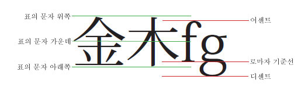
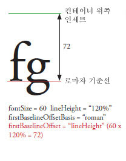
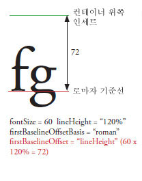
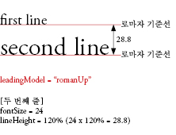
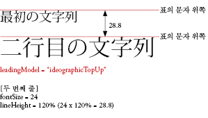
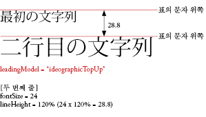
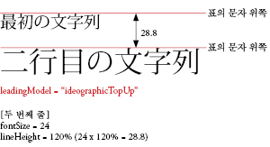
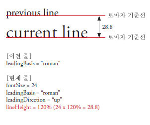
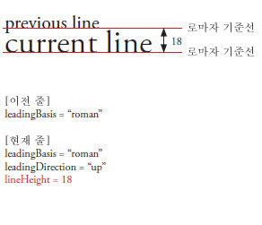

| 패키지 | flashx.textLayout.container |
| 클래스 | public class ContainerController |
| 상속 | ContainerController |
| 구현 | IInteractionEventHandler, ITextLayoutFormat, ISandboxSupport |
| 언어 버전: | ActionScript 3.0 |
| 런타임 버전: | Flash Player 10, AIR 1.5 |

관련 API 요소
flashx.textLayout.elements.TextFlow
flash.text.engine.TextLine
 상속되는 공용 속성 숨기기
상속되는 공용 속성 숨기기 상속되는 공용 속성 표시
상속되는 공용 속성 표시| 속성 | 정의 주체 | ||
|---|---|---|---|
| absoluteStart : int [읽기 전용]
컨테이너의 첫 번째 문자를 반환합니다. | ContainerController | ||
| alignmentBaseline : *
TextLayoutFormat: 도미넌트 기준선 정렬의 기준이 되는 기준선을 지정합니다. | ContainerController | ||
| backgroundAlpha : *
TextLayoutFormat: 배경에 대한 알파(투명도) 값입니다. 겹쳐 놓기 동안 undefined인 경우 기본값이 사용됩니다. | ContainerController | ||
| backgroundColor : *
TextLayoutFormat: 텍스트의 배경색입니다. 겹쳐 놓기 동안 undefined인 경우 기본값이 사용됩니다. | ContainerController | ||
| baselineShift : *
TextLayoutFormat: dominantBaseline 값에서 기준선을 이동하는 정도입니다. | ContainerController | ||
| blockProgression : *
TextLayoutFormat: 줄 배치의 수직 또는 수평 진행을 지정합니다. | ContainerController | ||
| breakOpportunity : *
TextLayoutFormat: 텍스트를 줄 바꿈하여 여러 줄로 나눌 때 줄을 나눌 수 있는 위치를 제어합니다. | ContainerController | ||
| cffHinting : *
TextLayoutFormat: 이 텍스트에 사용된 CFF 힌팅 유형입니다. | ContainerController | ||
| clearFloats : *
TextLayoutFormat: 부동 항목 주변 텍스트의 배열 방식을 제어합니다. | ContainerController | ||
| color : *
TextLayoutFormat: 텍스트의 색상입니다. | ContainerController | ||
| columnCount : *
TextLayoutFormat: 텍스트 열 수입니다. 겹쳐 놓기 동안 undefined인 경우 기본값이 사용됩니다. | ContainerController | ||
| columnGap : *
TextLayoutFormat: 열 사이에 남겨 둘 제본용 여백 공간의 크기(픽셀 단위)를 지정합니다. 겹쳐 놓기 동안 undefined인 경우 기본값이 사용됩니다. | ContainerController | ||
| columnState : ColumnState [읽기 전용]
컨테이너 내 열의 번호와 특징을 설명하는 ColumnState 객체를 반환합니다. | ContainerController | ||
| columnWidth : *
TextLayoutFormat: 픽셀 단위의 열 폭입니다. 겹쳐 놓기 동안 undefined인 경우 기본값이 사용됩니다. | ContainerController | ||
| compositionHeight : Number [읽기 전용]
컨테이너 내 텍스트에 허용된 세로쓰기 범위를 반환합니다. | ContainerController | ||
| compositionWidth : Number [읽기 전용]
컨테이너 내 텍스트에 허용된 가로쓰기 범위를 반환합니다. | ContainerController | ||
| computedFormat : flashx.textLayout.formats:ITextLayoutFormat [읽기 전용]
해당 루트 요소에서 상속한 속성을 포함하여 이 컨테이너에 적용된 속성과 함께 ITextLayoutFormat 인스턴스를 반환합니다. | ContainerController | ||
 | constructor : Object
지정된 객체 인스턴스의 클래스 객체 또는 생성자 함수에 대한 참조입니다. | Object | |
| container : Sprite [읽기 전용]
이 ContainerController 인스턴스에 대한 텍스트 줄이 포함된 컨테이너 표시 객체를 반환합니다. | ContainerController | ||
| containerControllerInitialFormat : flashx.textLayout.formats:ITextLayoutFormat [정적] | ContainerController | ||
| coreStyles : Object [읽기 전용] 이 ContainerController에 대해 coreStyles를 반환합니다. | ContainerController | ||
| digitCase : *
TextLayoutFormat: 이 텍스트에 사용된 숫자 케이스 유형입니다. | ContainerController | ||
| digitWidth : *
TextLayoutFormat: 이 텍스트에 사용된 숫자 폭 유형입니다. | ContainerController | ||
| direction : *
TextLayoutFormat: 텍스트 블록에 있는 텍스트의 기본 양방향 포함 수준을 지정합니다. | ContainerController | ||
| dominantBaseline : *
TextLayoutFormat: 줄에 있는 요소의 세로 위치를 결정하기 위해 alignmentBaseline에 물릴 요소 기준선을 지정합니다. | ContainerController | ||
| firstBaselineOffset : *
TextLayoutFormat: 컨테이너에서 첫 번째 줄의 기준선 위치를 지정합니다. | ContainerController | ||
| flowComposer : IFlowComposer [읽기 전용]
이 컨트롤러가 관리하는 컨테이너에 텍스트를 컴포지션하고 강조하는 흐름 컴포저 객체를 반환합니다. | ContainerController | ||
| fontFamily : *
TextLayoutFormat: 사용할 글꼴의 이름 또는 쉼표로 구분한 글꼴 이름 목록입니다. | ContainerController | ||
| fontLookup : *
TextLayoutFormat: 사용할 글꼴 조회입니다. | ContainerController | ||
| fontSize : *
TextLayoutFormat: 텍스트의 크기(픽셀 단위)입니다. | ContainerController | ||
| fontStyle : *
TextLayoutFormat: 텍스트의 스타일입니다. | ContainerController | ||
| fontWeight : *
TextLayoutFormat: 텍스트의 두께입니다. | ContainerController | ||
| format : flashx.textLayout.formats:ITextLayoutFormat
이 컨테이너에 대한 속성이 포함된 ITextLayoutFormat 객체를 저장합니다. | ContainerController | ||
| horizontalScrollPolicy : String
ScrollPolicy 클래스의 상수를 ON, OFF 또는 AUTO 중 하나로 설정하여 가로 스크롤 정책을 지정합니다. | ContainerController | ||
| horizontalScrollPosition : Number 스테이지에서 현재 가로 스크롤 위치를 지정합니다. | ContainerController | ||
| interactionManager : ISelectionManager [읽기 전용]
이 TextFlow 객체와 연관된 InteractionManager입니다. | ContainerController | ||
| justificationRule : *
TextLayoutFormat: 단락에서 텍스트를 양쪽 정렬하는 데 사용되는 규칙입니다. | ContainerController | ||
| justificationStyle : *
TextLayoutFormat: 단락의 양쪽 정렬에 사용되는 스타일입니다. | ContainerController | ||
| kerning : *
TextLayoutFormat: 커닝은 가독성을 향상시키기 위해 특정 문자 쌍 사이의 픽셀을 조정합니다. | ContainerController | ||
| leadingModel : *
TextLayoutFormat: 행간 기준과 행간 방향이 결합된 행간 모델을 지정합니다. | ContainerController | ||
| ligatureLevel : *
TextLayoutFormat: 글꼴에 정의된 합자 중 텍스트에 사용할 수 있는 합자를 제어합니다. | ContainerController | ||
| lineBreak : *
TextLayoutFormat: 컨테이너 내 줄 바꿈을 제어합니다. 겹쳐 놓기 동안 undefined인 경우 기본값이 사용됩니다. | ContainerController | ||
| lineHeight : *
TextLayoutFormat: 텍스트에 대한 행간 컨트롤입니다. | ContainerController | ||
| lineThrough : *
TextLayoutFormat: true이면 텍스트 가운데에 선이 그려지는 취소선이 적용됩니다. | ContainerController | ||
| linkActiveFormat : *
TextLayoutFormat: 일반 상태의 링크에 사용되는 서식 지정 특성을 정의합니다. | ContainerController | ||
| linkHoverFormat : *
TextLayoutFormat: 마우스가 링크 경계 내에 있을 때 마우스로 링크를 가리킨 상태의 링크에 사용되는 서식 지정 특성을 정의합니다. | ContainerController | ||
| linkNormalFormat : *
TextLayoutFormat: 일반 상태의 링크에 사용되는 서식 지정 특성을 정의합니다. | ContainerController | ||
| listAutoPadding : *
TextLayoutFormat: 목록이 시작되는 쪽의 패딩 값이 auto인 경우 목록이 시작되는 가장자리에 자동 들여쓰기를 지정합니다. | ContainerController | ||
| listMarkerFormat : *
TextLayoutFormat: 서식 지정 특성 목록 표시자를 정의합니다. | ContainerController | ||
| listStylePosition : *
TextLayoutFormat: 올바른 값은 ListStylePosition.INSIDE, ListStylePosition.OUTSIDE, FormatValue.INHERIT입니다. 기본값은 설정되지 않았음을 나타내는 undefined입니다. 겹쳐 놓기 동안 undefined인 경우 이 속성은 조상의 값을 상속합니다. | ContainerController | ||
| listStyleType : *
TextLayoutFormat: 올바른 값은 ListStyleType.UPPER_ALPHA, ListStyleType.LOWER_ALPHA, ListStyleType.UPPER_ROMAN, ListStyleType.LOWER_ROMAN, ListStyleType.NONE, ListStyleType.DISC, ListStyleType.CIRCLE, ListStyleType.SQUARE, ListStyleType.BOX, ListStyleType.CHECK, ListStyleType.DIAMOND, ListStyleType.HYPHEN, ListStyleType.ARABIC_INDIC, ListStyleType.BENGALI, ListStyleType.DECIMAL, ListStyleType.DECIMAL_LEADING_ZERO, ListStyleType.DEVANAGARI, ListStyleType.GUJARATI, ListStyleType.GURMUKHI, ListStyleType.KANNADA, ListStyleType.PERSIAN, ListStyleType.THAI, ListStyleType.URDU, ListStyleType.CJK_EARTHLY_BRANCH, ListStyleType.CJK_HEAVENLY_STEM, ListStyleType.HANGUL, ListStyleType.HANGUL_CONSTANT, ListStyleType.HIRAGANA, ListStyleType.HIRAGANA_IROHA, ListStyleType.KATAKANA, ListStyleType.KATAKANA_IROHA, ListStyleType.LOWER_ALPHA, ListStyleType.LOWER_GREEK, ListStyleType.LOWER_LATIN, ListStyleType.UPPER_ALPHA, ListStyleType.UPPER_GREEK, ListStyleType.UPPER_LATIN, FormatValue.INHERIT입니다. 기본값은 설정되지 않았음을 나타내는 undefined입니다. 겹쳐 놓기 동안 undefined인 경우 이 속성은 조상의 값을 상속합니다. | ContainerController | ||
| locale : *
TextLayoutFormat: 텍스트의 로캘입니다. | ContainerController | ||
| paddingBottom : *
TextLayoutFormat: 아래쪽 인세트(픽셀 단위)입니다. | ContainerController | ||
| paddingLeft : *
TextLayoutFormat: 왼쪽 인세트(픽셀 단위)입니다. | ContainerController | ||
| paddingRight : *
TextLayoutFormat: 오른쪽 인세트(픽셀 단위)입니다. | ContainerController | ||
| paddingTop : *
TextLayoutFormat: 위쪽 인세트(픽셀 단위)입니다. | ContainerController | ||
| paragraphEndIndent : *
TextLayoutFormat: 단락의 끝 가장자리를 들여 쓸 크기를 지정하는 숫자(픽셀 단위)입니다. | ContainerController | ||
| paragraphSpaceAfter : *
TextLayoutFormat: 단락 뒤에 남겨 둘 공간 크기(픽셀 단위)를 지정하는 숫자입니다. | ContainerController | ||
| paragraphSpaceBefore : *
TextLayoutFormat: 단락 앞에 남겨 둘 공간 크기(픽셀 단위)를 지정하는 숫자입니다. | ContainerController | ||
| paragraphStartIndent : *
TextLayoutFormat: 단락의 시작 가장자리를 들여 쓸 크기를 지정하는 숫자(픽셀 단위)입니다. | ContainerController | ||
| renderingMode : *
TextLayoutFormat: 이 텍스트에 사용되는 렌더링 모드입니다. | ContainerController | ||
| rootElement : ContainerFormattedElement [읽기 전용]
컨테이너에 표시되는 루트 요소를 반환합니다. | ContainerController | ||
| styleName : *
TextLayoutFormat: 요소에 식별 클래스를 지정하면 styleName을 참조하여 요소의 스타일을 설정할 수 있습니다. | ContainerController | ||
| styles : Object [읽기 전용] 이 ContainerController에 대한 스타일을 반환합니다. | ContainerController | ||
| tabStops : *
TextLayoutFormat: 단락과 연결된 탭 정지를 지정합니다. | ContainerController | ||
| textAlign : *
TextLayoutFormat: 컨테이너를 기준으로 한 단락의 줄 정렬입니다. | ContainerController | ||
| textAlignLast : *
TextLayoutFormat: 양쪽 정렬된 텍스트의 컨테이너를 기준으로 한 단락의 마지막 줄 또는 유일한 줄의 정렬입니다. | ContainerController | ||
| textAlpha : *
TextLayoutFormat: 텍스트의 알파(투명도) 값입니다. | ContainerController | ||
| textDecoration : *
TextLayoutFormat: 텍스트의 장식입니다. | ContainerController | ||
| textFlow : flashx.textLayout.elements:TextFlow [읽기 전용]
내용이 컨테이너에 표시되는 TextFlow 객체를 반환합니다. | ContainerController | ||
| textIndent : *
TextLayoutFormat: 단락의 첫 번째 줄을 들여 쓸 크기를 지정하는 숫자(픽셀 단위)입니다. | ContainerController | ||
| textJustify : *
TextLayoutFormat: 텍스트를 양쪽 정렬하는 옵션을 지정합니다. | ContainerController | ||
| textLength : int [읽기 전용] 컨테이너의 총 문자 수를 반환합니다. | ContainerController | ||
| textRotation : *
TextLayoutFormat: 이 텍스트를 회전할 각도의 수를 결정합니다. | ContainerController | ||
| trackingLeft : *
TextLayoutFormat: 각 문자의 왼쪽에 적용할 자간(수동 커닝)의 크기를 나타내는 픽셀 단위의 숫자 또는 fontSize의 퍼센트(예: 120%)입니다. | ContainerController | ||
| trackingRight : *
TextLayoutFormat: 각 문자의 오른쪽에 적용할 자간(수동 커닝)의 크기를 나타내는 픽셀 단위의 숫자 또는 fontSize의 퍼센트(예: 120%)입니다. | ContainerController | ||
| typographicCase : *
TextLayoutFormat: 이 텍스트에 사용된 입력 체계 대/소문자 유형입니다. | ContainerController | ||
| userStyles : Object ContainerController 객체에서 사용자 스타일을 읽고 쓰는 것을 허용합니다. | ContainerController | ||
| verticalAlign : *
TextLayoutFormat: 세로 정렬 또는 양쪽 정렬입니다. 겹쳐 놓기 동안 undefined인 경우 기본값이 사용됩니다. | ContainerController | ||
| verticalScrollPolicy : String ScrollPolicy 클래스의 상수를 ON, OFF 또는 AUTO 중 하나로 설정하여 세로 스크롤 정책을 지정합니다. | ContainerController | ||
| verticalScrollPosition : Number 스테이지에서 현재 세로 스크롤 위치를 지정합니다. | ContainerController | ||
| whiteSpaceCollapse : *
TextLayoutFormat: 텍스트를 TextFlow로 가져올 때 공백을 축소하거나 유지합니다. | ContainerController | ||
| wordSpacing : *
TextLayoutFormat: 양쪽 정렬하는 동안 사용할 단어 사이의 최적, 최소 및 최대 간격을 보통 간격의 배수로 지정합니다. | ContainerController | ||
| 메서드 | 정의 주체 | ||
|---|---|---|---|
ContainerController(container:Sprite, compositionWidth:Number = 100, compositionHeight:Number = 100)
생성자 - ContainerController 인스턴스를 만듭니다. | ContainerController | ||
클라이언트가 이벤트를 관리하는 경우 Event.ACTIVATE 이벤트를 처리합니다. | ContainerController | ||
"드래그" 선택 동안 스크롤 이벤트를 처리합니다. | ContainerController | ||
보안 샌드박스의 외부에서 mouseup 및 mousemove 이벤트 전달을 시작하도록 클라이언트에 요청하기 위해 호출됩니다. | ContainerController | ||
styleProp에서 지정된 스타일을 이 FlowElement에서 삭제합니다. | ContainerController | ||
클라이언트가 이벤트를 관리하는 경우 Event.DEACTIVATE 이벤트를 처리합니다. | ContainerController | ||
클라이언트가 이벤트를 관리하는 경우 편집 이벤트(CUT, COPY, PASTE, SELECT_ALL)를 처리합니다. | ContainerController | ||
보안 샌드박스의 외부에서 mouseup 및 mousemove 이벤트 전달이 더 이상 필요하지 않음을 클라이언트에 알리기 위해 호출됩니다. | ContainerController | ||
클라이언트가 이벤트를 관리하는 경우 FocusEvent.KEY_FOCUS_CHANGE 및 FocusEvent.MOUSE_FOCUS_CHANGE 이벤트를 처리합니다. | ContainerController | ||
클라이언트가 이벤트를 관리하는 경우 FocusEvent.FOCUS_IN 이벤트를 처리합니다. | ContainerController | ||
클라이언트가 이벤트를 관리하는 경우 FocusEvent.FOCUS_OUT 이벤트를 처리합니다. | ContainerController | ||
마지막 컴포지션 또는 업데이트 작업에서 반영된 대로 텍스트가 차지하는 영역을 반환합니다. | ContainerController | ||
지정된 줄 수만큼 위로 또는 아래로 스크롤하는 데 필요한 스크롤 거리를 계산합니다. | ContainerController | ||
styleProp 매개 변수에서 지정된 스타일 값을 반환합니다. | ContainerController | ||
|
지정된 속성이 객체에 정의되어 있는지 여부를 나타냅니다. | Object | |
클라이언트가 이벤트를 관리하는 경우 IMEEvent.IME_START_COMPOSITION 이벤트를 처리합니다. | ContainerController | ||
이 컨테이너의 모든 텍스트를 컴포지션이 필요한 것으로 표시합니다. | ContainerController | ||
컨테이너에 컴포지션이 필요한 텍스트가 있는지 여부를 결정합니다. | ContainerController | ||
|
Object 클래스의 인스턴스가 매개 변수로 지정된 객체의 프로토타입 체인에 있는지 여부를 나타냅니다. | Object | |
클라이언트가 이벤트를 관리하는 경우 KeyboardEvent.KEY_DOWN 이벤트를 처리합니다. | ContainerController | ||
클라이언트가 이벤트를 관리하는 경우 FocusEvent.KEY_FOCUS_CHANGE 이벤트를 처리합니다. | ContainerController | ||
클라이언트가 이벤트를 관리하는 경우 Keyboard.KEY_UP 이벤트를 처리합니다. | ContainerController | ||
클라이언트가 이벤트를 관리하는 경우 ContextMenuEvent.MENU_SELECT 이벤트를 처리합니다. | ContainerController | ||
클라이언트가 이벤트를 관리하는 경우 MouseEvent.DOUBLE_CLICK 이벤트를 처리합니다. | ContainerController | ||
클라이언트가 이벤트를 관리하는 경우 MouseEvent.MOUSE_DOWN 이벤트를 처리합니다. | ContainerController | ||
클라이언트가 이벤트를 관리하는 경우 MouseEvent.MOUSE_MOVE 이벤트를 처리합니다. | ContainerController | ||
보안 샌드박스의 외부에서 mouseMove 이벤트를 전달하는 클라이언트 호출입니다. | ContainerController | ||
클라이언트가 이벤트를 관리하는 경우 MouseEvent.MOUSE_OUT 이벤트를 처리합니다. | ContainerController | ||
클라이언트가 이벤트를 관리하는 경우 MouseEvent.MOUSE_OVER 이벤트를 처리합니다. | ContainerController | ||
클라이언트가 이벤트를 관리하는 경우 MouseEvent.MOUSE_UP 이벤트를 처리합니다. | ContainerController | ||
보안 샌드박스의 외부에서 mouseUp 이벤트를 전달하는 클라이언트 호출입니다. | ContainerController | ||
클라이언트가 이벤트를 관리하는 경우 MouseEvent.MOUSE_WHEEL 이벤트를 처리합니다. | ContainerController | ||
|
지정된 속성이 존재하고 열거 가능한지 여부를 나타냅니다. | Object | |
컨테이너에 해당 텍스트 범위가 표시되도록 스크롤합니다. | ContainerController | ||
ITextSupport를 구현하는 구성 요소에서 선택한 텍스트의 범위를 설정합니다. | ContainerController | ||
컨테이너의 텍스트에 허용되는 폭과 높이를 설정합니다. | ContainerController | ||
|
루프 작업에서 동적 속성을 사용할 수 있는지 여부를 설정합니다. | Object | |
styleProp 매개 변수에서 지정된 스타일 값을 newValue 매개 변수에서 지정된 값으로 설정합니다. | ContainerController | ||
클라이언트가 이벤트를 관리할 때 SoftKeyboardEvent.SOFT_KEYBOARD_ACTIVATING 이벤트를 처리합니다. | ContainerController | ||
클라이언트가 이벤트를 관리하는 경우 TextEvent.TEXT_INPUT 이벤트를 처리합니다. | ContainerController | ||
|
로캘별 규칙에 따라 서식이 지정된 이 객체의 문자열 표현을 반환합니다. | Object | |
|
지정된 객체의 문자열 표현을 반환합니다. | Object | |
|
지정된 객체의 프리미티브 값을 반환합니다. | Object | |
| 메서드 | 정의 주체 | ||
|---|---|---|---|
배경색 등의 배경 모양이 그려지는 flash.display.Shape 객체를 추가합니다. | ContainerController | ||
addInlineGraphicElement(parent:DisplayObjectContainer, inlineGraphicElement:DisplayObject, index:int):void
flash.display.DisplayObject 객체를 부모의 자손으로 추가합니다. | ContainerController | ||
블록 선택 강조 표시, 커서 등의 선택 모양이 추가되는 flash.display.DisplayObjectContainer 객체를 추가합니다. | ContainerController | ||
flash.text.engine.TextLine 객체를 container의 자손으로 추가합니다. | ContainerController | ||
ContainerController에 대한 컨텍스트 메뉴를 만듭니다. | ContainerController | ||
부모 컨테이너에서 첫 번째 텍스트 줄이 나타나야할 위치의 인덱스를 가져옵니다. | ContainerController | ||
배경색 등의 배경 모양이 그려지는 flash.display.Shape 객체를 제거합니다. | ContainerController | ||
flash.display.DisplayObject 객체를 부모로부터 제거합니다. | ContainerController | ||
블록 선택 강조 표시, 커서 등의 선택 모양을 포함하는 flash.display.DisplayObjectContainer 객체를 제거합니다. | ContainerController | ||
해당 부모에서 flash.text.engine.TextLine 객체를 제거합니다. | ContainerController | ||
스크롤하는 경우 일부만 보이는 줄이 스크롤 가능한 영역에 클리핑되도록 컨테이너 사각형에 스크롤 사각형을 설정합니다. | ContainerController | ||
_mouseWheelListenerAttached | 속성 |
tlf_internal var _mouseWheelListenerAttached:Boolean = falseabsoluteStart | 속성 |
alignmentBaseline | 속성 |
alignmentBaseline:*| 언어 버전: | ActionScript 3.0 |
| 런타임 버전: | Flash Player 10, AIR 1.5 |
TextLayoutFormat: 도미넌트 기준선 정렬의 기준이 되는 기준선을 지정합니다. 예를 들어 dominantBaseline을 ASCENT로 설정한 경우 alignmentBaseline을 DESCENT로 설정하면 텍스트의 위쪽이 DESCENT 기준선으로 정렬되거나 해당 줄 아래에 정렬됩니다. 일반적으로 줄에서 가장 큰 요소가 기준선을 결정합니다.

올바른 값은 TextBaseline.ROMAN, TextBaseline.ASCENT, TextBaseline.DESCENT, TextBaseline.IDEOGRAPHIC_TOP, TextBaseline.IDEOGRAPHIC_CENTER, TextBaseline.IDEOGRAPHIC_BOTTOM, TextBaseline.USE_DOMINANT_BASELINE, FormatValue.INHERIT입니다.
기본값은 설정되지 않았음을 나타내는 undefined입니다.
겹쳐 놓기 동안 undefined인 경우 이 속성은 조상의 값을 상속합니다. 이 속성 값을 설정한 조상이 없으면 값은 TextBaseline.USE_DOMINANT_BASELINE이 됩니다.
구현
public function get alignmentBaseline():* public function set alignmentBaseline(value:any):void오류
RangeError — 설정한 값이 이 속성의 범위 내에 없는 경우입니다.
|
관련 API 요소
backgroundAlpha | 속성 |
backgroundAlpha:*| 언어 버전: | ActionScript 3.0 |
| 런타임 버전: | Flash Player 10, AIR 1.5 |
TextLayoutFormat: 배경에 대한 알파(투명도) 값입니다. 겹쳐 놓기 동안 undefined인 경우 기본값이 사용됩니다. 값이 0이면 완전하게 투명한 상태이며 값이 1이면 완전하게 불투명한 상태입니다. alpha가 0으로 설정된 표시 객체는 눈에 보이지는 않지만 활성화되어 있습니다.
올바른 값은 0~1 범위의 숫자와 FormatValue.INHERIT입니다.
기본값은 설정되지 않았음을 나타내는 undefined입니다.
겹쳐 놓기 동안 undefined인 경우 이 속성의 값은 1입니다.
구현
public function get backgroundAlpha():* public function set backgroundAlpha(value:any):void오류
RangeError — 설정한 값이 이 속성의 범위 내에 없는 경우입니다.
|
backgroundColor | 속성 |
backgroundColor:*| 언어 버전: | ActionScript 3.0 |
| 런타임 버전: | Flash Player 10, AIR 1.5 |
TextLayoutFormat: 텍스트의 배경색입니다. 겹쳐 놓기 동안 undefined인 경우 기본값이 사용됩니다. 상수 값 BackgroundColor.TRANSPARENT 또는 3개의 8비트 RGB(빨강, 녹색, 파랑) 값을 지정하는 16진수 값(예: 0xFF0000는 빨강, 0x00FF00은 녹색) 중 하나일 수 있습니다.
올바른 문자열 값은 BackgroundColor.TRANSPARENT, FormatValue.INHERIT 및 0x0~0xffffffff 범위의 uint입니다.
기본값은 설정되지 않았음을 나타내는 undefined입니다.
겹쳐 놓기 동안 undefined인 경우 이 속성의 값은 BackgroundColor.TRANSPARENT입니다.
구현
public function get backgroundColor():* public function set backgroundColor(value:any):void오류
RangeError — 설정한 값이 이 속성의 범위 내에 없는 경우입니다.
|
관련 API 요소
baselineShift | 속성 |
baselineShift:*| 언어 버전: | ActionScript 3.0 |
| 런타임 버전: | Flash Player 10, AIR 1.5 |
TextLayoutFormat: dominantBaseline 값에서 기준선을 이동하는 정도입니다. 단위는 fontSize의 픽셀 또는 퍼센트(예: 140% 등의 문자열 값 입력)입니다. 양수 값으로 설정하면 가로쓰기 텍스트의 줄이 위로 이동(세로쓰기 텍스트의 경우 오른쪽으로 이동)하며 음수 값으로 설정하면 가로쓰기 텍스트의 줄이 아래로 이동(세로쓰기 텍스트의 경우 왼쪽으로 이동)합니다.
올바른 값은 BaselineShift.SUPERSCRIPT, BaselineShift.SUBSCRIPT, FormatValue.INHERIT입니다.
올바른 값은 -1000에서 1000 사이의 숫자입니다.
올바른 퍼센트 값은 -1000에서 1000 사이의 숫자입니다.
기본값은 설정되지 않았음을 나타내는 undefined입니다.
겹쳐 놓기 동안 undefined인 경우 이 속성은 조상의 값을 상속합니다. 조상에서 이 값을 설정하지 않으면 이 속성의 값은 0.0입니다.
구현
public function get baselineShift():* public function set baselineShift(value:any):void오류
RangeError — 설정한 값이 이 속성의 범위 내에 없는 경우입니다.
|
관련 API 요소
blockProgression | 속성 |
blockProgression:*| 언어 버전: | ActionScript 3.0 |
| 런타임 버전: | Flash Player 10, AIR 1.5 |
TextLayoutFormat: 줄 배치의 수직 또는 수평 진행을 지정합니다. 줄은 위에서 아래로 배치(BlockProgression.TB, 가로쓰기 텍스트에서 사용됨)되거나 오른쪽에서 왼쪽으로 배치(BlockProgression.RL, 세로쓰기 텍스트에서 사용됨)될 수 있습니다.
올바른 값은 BlockProgression.RL, BlockProgression.TB, FormatValue.INHERIT입니다.
기본값은 설정되지 않았음을 나타내는 undefined입니다.
겹쳐 놓기 동안 undefined인 경우 이 속성은 조상의 값을 상속합니다. 이 속성 값을 설정한 조상이 없으면 값은 BlockProgression.TB가 됩니다.
구현
public function get blockProgression():* public function set blockProgression(value:any):void오류
RangeError — 설정한 값이 이 속성의 범위 내에 없는 경우입니다.
|
관련 API 요소
breakOpportunity | 속성 |
breakOpportunity:*| 언어 버전: | ActionScript 3.0 |
| 런타임 버전: | Flash Player 10, AIR 1.5 |
TextLayoutFormat: 텍스트를 줄 바꿈하여 여러 줄로 나눌 때 줄을 나눌 수 있는 위치를 제어합니다. BreakOpportunity.AUTO로 설정하면 텍스트가 일반적인 방식으로 분리됩니다. BreakOpportunity.NONE로 설정하면 텍스트가 기준을 초과하거나 줄을 분리할 수 있는 다른 위치가 없지 않는 한 텍스트가 분리되지 않습니다. BreakOpportunity.ANY로 설정하면 단어 사이가 아닌 아무 곳에서나 줄 분리됩니다. BreakOpportunity.ALL로 설정하면 각 입력 클러스터가 개별적인 줄에 배치됩니다. 이는 패스 위에 배치된 텍스트에 유용합니다.
올바른 값은 BreakOpportunity.ALL, BreakOpportunity.ANY, BreakOpportunity.AUTO, BreakOpportunity.NONE, FormatValue.INHERIT입니다.
기본값은 설정되지 않았음을 나타내는 undefined입니다.
겹쳐 놓기 동안 undefined인 경우 이 속성은 조상의 값을 상속합니다. 이 속성 값을 설정한 조상이 없으면 값은 BreakOpportunity.AUTO가 됩니다.
구현
public function get breakOpportunity():* public function set breakOpportunity(value:any):void오류
RangeError — 설정한 값이 이 속성의 범위 내에 없는 경우입니다.
|
관련 API 요소
cffHinting | 속성 |
cffHinting:*| 언어 버전: | ActionScript 3.0 |
| 런타임 버전: | Flash Player 10, AIR 1.5 |
TextLayoutFormat: 이 텍스트에 사용된 CFF 힌팅 유형입니다. CFF 힌팅은 Flash 런타임에서 굵은 가로 스템을 하위 픽셀 격자에 강제로 맞출지 여부를 결정합니다. 이 속성은 renderingMode 속성이 RenderingMode.CFF로 설정되고, fontLookup 속성이 FontLookup.EMBEDDED_CFF로 설정되어 해당 글꼴이 포함된 경우에만 적용됩니다. 화면 크기가 작은 경우 힌팅을 통해 텍스트의 선명함과 가독성을 높일 수 있습니다.
올바른 값은 CFFHinting.NONE, CFFHinting.HORIZONTAL_STEM, FormatValue.INHERIT입니다.
기본값은 설정되지 않았음을 나타내는 undefined입니다.
겹쳐 놓기 동안 undefined인 경우 이 속성은 조상의 값을 상속합니다. 이 속성 값을 설정한 조상이 없으면 값은 CFFHinting.HORIZONTAL_STEM이 됩니다.
구현
public function get cffHinting():* public function set cffHinting(value:any):void오류
RangeError — 설정한 값이 이 속성의 범위 내에 없는 경우입니다.
|
관련 API 요소
clearFloats | 속성 |
clearFloats:*| 언어 버전: | ActionScript 3.0 |
| 런타임 버전: | Flash Player 10, AIR 1.5 |
TextLayoutFormat: 부동 항목 주변 텍스트의 배열 방식을 제어합니다. 값이 none이면 텍스트가 부동 항목 주위를 가장 밀접하게 감싸게 됩니다. 값이 left이면 텍스트가 컨테이너에서 왼쪽 부동 항목이 있는 부분을 건너뛰고, 값이 right이면 컨테이너에서 오른쪽 부동 항목이 있는 부분을 건너뜁니다. 값이 both이면 텍스트가 모든 부동 항목을 건너뜁니다.
올바른 값은 ClearFloats.START, ClearFloats.END, ClearFloats.LEFT, ClearFloats.RIGHT, ClearFloats.BOTH, ClearFloats.NONE, FormatValue.INHERIT입니다.
기본값은 설정되지 않았음을 나타내는 undefined입니다.
겹쳐 놓기 동안 undefined인 경우 이 속성의 값은 ClearFloats.NONE입니다.
구현
public function get clearFloats():* public function set clearFloats(value:any):void오류
RangeError — 설정한 값이 이 속성의 범위 내에 없는 경우입니다.
|
관련 API 요소
color | 속성 |
color:*| 언어 버전: | ActionScript 3.0 |
| 런타임 버전: | Flash Player 10, AIR 1.5 |
TextLayoutFormat: 텍스트의 색상입니다. 3개의 8비트 RGB(빨강, 녹색, 파랑) 값을 지정하는 16진수입니다. 예를 들어 0xFF0000는 빨강, 0x00FF00은 녹색입니다.
기본값은 설정되지 않았음을 나타내는 undefined입니다.
겹쳐 놓기 동안 undefined인 경우 이 속성은 조상의 값을 상속합니다. 조상에서 이 값을 설정하지 않으면 이 속성의 값은 0입니다.
구현
public function get color():* public function set color(value:any):void오류
RangeError — 설정한 값이 이 속성의 범위 내에 없는 경우입니다.
|
columnCount | 속성 |
columnCount:*| 언어 버전: | ActionScript 3.0 |
| 런타임 버전: | Flash Player 10, AIR 1.5 |
TextLayoutFormat: 텍스트 열 수입니다. 겹쳐 놓기 동안 undefined인 경우 기본값이 사용됩니다. 열 수는 다른 열 설정을 재정의합니다. 값은 정수이거나 지정되지 않은 경우 AUTO입니다. columnCount가 지정되지 않은 경우 columnWidth를 사용하여 컨테이너에 맞는 수만큼 열을 만듭니다.
올바른 문자열 값은 FormatValue.AUTO, FormatValue.INHERIT 및 1~50 범위의 int입니다.
기본값은 설정되지 않았음을 나타내는 undefined입니다.
겹쳐 놓기 동안 undefined인 경우 이 속성의 값은 FormatValue.AUTO가 됩니다.
구현
public function get columnCount():* public function set columnCount(value:any):void오류
RangeError — 설정한 값이 이 속성의 범위 내에 없는 경우입니다.
|
관련 API 요소
columnGap | 속성 |
columnGap:*| 언어 버전: | ActionScript 3.0 |
| 런타임 버전: | Flash Player 10, AIR 1.5 |
TextLayoutFormat: 열 사이에 남겨 둘 제본용 여백 공간의 크기(픽셀 단위)를 지정합니다. 겹쳐 놓기 동안 undefined인 경우 기본값이 사용됩니다. 값은 숫자입니다.
올바른 값은 0~1,000 범위의 숫자와 FormatValue.INHERIT입니다.
기본값은 설정되지 않았음을 나타내는 undefined입니다.
겹쳐 놓기 동안 undefined인 경우 이 속성의 값은 20입니다.
구현
public function get columnGap():* public function set columnGap(value:any):void오류
RangeError — 설정한 값이 이 속성의 범위 내에 없는 경우입니다.
|
columnState | 속성 |
columnState:ColumnState [읽기 전용] | 언어 버전: | ActionScript 3.0 |
| 런타임 버전: | Flash Player 10, AIR 1.5 |
컨테이너 내 열의 번호와 특징을 설명하는 ColumnState 객체를 반환합니다. 이러한 값은 IFlowComposer.compose() 또는 IFlowComposer.updateAllControllers()의 결과로 텍스트가 다시 컴포지션될 때 업데이트됩니다.
구현
public function get columnState():ColumnState관련 API 요소
columnWidth | 속성 |
columnWidth:*| 언어 버전: | ActionScript 3.0 |
| 런타임 버전: | Flash Player 10, AIR 1.5 |
TextLayoutFormat: 픽셀 단위의 열 폭입니다. 겹쳐 놓기 동안 undefined인 경우 기본값이 사용됩니다. 열의 수가 아닌 열의 폭을 지정한 경우 컨테이너 폭과 columnGap 설정이 지정되어 있으면 TextLayout에서 해당 폭의 열을 가능한 수만큼 만듭니다. 나머지 공백은 마지막 열 뒤에 남습니다. 값은 숫자입니다.
올바른 문자열 값은 FormatValue.AUTO, FormatValue.INHERIT 및 0~8,000 범위의 숫자입니다.
기본값은 설정되지 않았음을 나타내는 undefined입니다.
겹쳐 놓기 동안 undefined인 경우 이 속성의 값은 FormatValue.AUTO가 됩니다.
구현
public function get columnWidth():* public function set columnWidth(value:any):void오류
RangeError — 설정한 값이 이 속성의 범위 내에 없는 경우입니다.
|
관련 API 요소
compositionHeight | 속성 |
compositionWidth | 속성 |
computedFormat | 속성 |
computedFormat:flashx.textLayout.formats:ITextLayoutFormat [읽기 전용] | 언어 버전: | ActionScript 3.0 |
| 런타임 버전: | Flash Player 10, AIR 1.5 |
해당 루트 요소에서 상속한 속성을 포함하여 이 컨테이너에 적용된 속성과 함께 ITextLayoutFormat 인스턴스를 반환합니다.
구현
public function get computedFormat():flashx.textLayout.formats:ITextLayoutFormat관련 API 요소
container | 속성 |
containerControllerInitialFormat | 속성 |
containerControllerInitialFormat:flashx.textLayout.formats:ITextLayoutFormat구현
public static function get containerControllerInitialFormat():flashx.textLayout.formats:ITextLayoutFormat public static function set containerControllerInitialFormat(value:flashx.textLayout.formats:ITextLayoutFormat):voidcoreStyles | 속성 |
coreStyles:Object [읽기 전용] | 언어 버전: | ActionScript 3.0 |
| 런타임 버전: | Flash Player 10, AIR 1.5 |
이 ContainerController에 대해 coreStyles를 반환합니다. getter가 기본 스타일 사전의 복사본을 만듭니다. 반환된 객체에는 TextLayoutFormat을 통해 정의되고 TextLayoutFormat.description에 저장되는 형식이 들어 있습니다. 반환된 객체는 스타일 이름-값 쌍의 배열로 구성되어 있습니다.
구현
public function get coreStyles():Object관련 API 요소
digitCase | 속성 |
digitCase:*| 언어 버전: | ActionScript 3.0 |
| 런타임 버전: | Flash Player 10, AIR 1.5 |
TextLayoutFormat: 이 텍스트에 사용된 숫자 케이스 유형입니다. 값을 DigitCase.OLD_STYLE로 설정하면 다양한 어센더와 디센더를 사용하여 소문자 서체와 유사하게 됩니다. 숫자는 비례적으로 공간이 지정됩니다. 이 스타일은 선택한 서체에서만 사용할 수 있으며 보조 또는 전문가 글꼴에서 가장 일반적입니다. DigitCase.LINING 설정을 사용하면 모두 대문자 크기로 지정되고 일반적으로 차트에서 고정 폭으로 정렬됩니다.

올바른 값은 DigitCase.DEFAULT, DigitCase.LINING, DigitCase.OLD_STYLE, FormatValue.INHERIT입니다.
기본값은 설정되지 않았음을 나타내는 undefined입니다.
겹쳐 놓기 동안 undefined인 경우 이 속성은 조상의 값을 상속합니다. 이 속성 값을 설정한 조상이 없으면 값은 DigitCase.DEFAULT가 됩니다.
구현
public function get digitCase():* public function set digitCase(value:any):void오류
RangeError — 설정한 값이 이 속성의 범위 내에 없는 경우입니다.
|
관련 API 요소
digitWidth | 속성 |
digitWidth:*| 언어 버전: | ActionScript 3.0 |
| 런타임 버전: | Flash Player 10, AIR 1.5 |
TextLayoutFormat: 이 텍스트에 사용된 숫자 폭 유형입니다. 이 값은 개별 숫자를 표시하는 데 가장 적합한 DigitWidth.PROPORTIONAL 또는 표, 차트, 세로 줄에서 숫자를 표시하는 데 가장 적합한 DigitWidth.TABULAR일 수 있습니다.

올바른 값은 DigitWidth.DEFAULT, DigitWidth.PROPORTIONAL, DigitWidth.TABULAR, FormatValue.INHERIT입니다.
기본값은 설정되지 않았음을 나타내는 undefined입니다.
겹쳐 놓기 동안 undefined인 경우 이 속성은 조상의 값을 상속합니다. 이 속성 값을 설정한 조상이 없으면 값은 DigitWidth.DEFAULT가 됩니다.
구현
public function get digitWidth():* public function set digitWidth(value:any):void오류
RangeError — 설정한 값이 이 속성의 범위 내에 없는 경우입니다.
|
관련 API 요소
direction | 속성 |
direction:*| 언어 버전: | ActionScript 3.0 |
| 런타임 버전: | Flash Player 10, AIR 1.5 |
TextLayoutFormat: 텍스트 블록에 있는 텍스트의 기본 양방향 포함 수준을 지정합니다. 왼쪽에서 오른쪽 읽기 순서(예: 라틴어 스타일 스크립트) 또는 오른쪽에서 왼쪽 읽기 순서(예: 아랍어 또는 히브리어)입니다. 또한 이 속성은 컨테이너 수준에서 적용될 때 열 방향에 영향을 줍니다. 열은 텍스트와 마찬가지로 왼쪽에서 오른쪽 또는 오른쪽에서 왼쪽 방향이 될 수 있습니다. 아래에 몇 가지 예가 나와 있습니다.

올바른 값은 Direction.LTR, Direction.RTL, FormatValue.INHERIT입니다.
기본값은 설정되지 않았음을 나타내는 undefined입니다.
겹쳐 놓기 동안 undefined인 경우 이 속성은 조상의 값을 상속합니다. 이 속성 값을 설정한 조상이 없으면 값은 Direction.LTR이 됩니다.
구현
public function get direction():* public function set direction(value:any):void오류
RangeError — 설정한 값이 이 속성의 범위 내에 없는 경우입니다.
|
관련 API 요소
dominantBaseline | 속성 |
dominantBaseline:*| 언어 버전: | ActionScript 3.0 |
| 런타임 버전: | Flash Player 10, AIR 1.5 |
TextLayoutFormat: 줄에 있는 요소의 세로 위치를 결정하기 위해 alignmentBaseline에 정렬될 요소 기준선을 지정합니다. TextBaseline.AUTO 값은 부모 단락의 locale 속성에 기반한 도미넌트 기준선을 선택합니다. 일본어와 중국어의 경우 선택한 기준선 값은 TextBaseline.IDEOGRAPHIC_CENTER이고 그 외의 모든 언어는 TextBaseline.ROMAN입니다. 이러한 기준선은 글꼴 및 글꼴 크기에 따라 선택됩니다.
올바른 값은 FormatValue.AUTO, TextBaseline.ROMAN, TextBaseline.ASCENT, TextBaseline.DESCENT, TextBaseline.IDEOGRAPHIC_TOP, TextBaseline.IDEOGRAPHIC_CENTER, TextBaseline.IDEOGRAPHIC_BOTTOM, FormatValue.INHERIT입니다.
기본값은 설정되지 않았음을 나타내는 undefined입니다.
겹쳐 놓기 동안 undefined인 경우 이 속성은 조상의 값을 상속합니다. 이 속성 값을 설정한 조상이 없으면 값은 FormatValue.AUTO가 됩니다.
구현
public function get dominantBaseline():* public function set dominantBaseline(value:any):void오류
RangeError — 설정한 값이 이 속성의 범위 내에 없는 경우입니다.
|
관련 API 요소
firstBaselineOffset | 속성 |
firstBaselineOffset:*| 언어 버전: | ActionScript 3.0 |
| 런타임 버전: | Flash Player 10, AIR 1.5 |
TextLayoutFormat: 컨테이너에서 첫 번째 줄의 기준선 위치를 지정합니다. 이 속성에서 참조하는 기준선은 컨테이너 수준 로캘에 따라 달라집니다. 일본어와 중국어의 경우 _BOTTOM이고 그 외의 모든 언어는 ROMAN입니다. 첫 번째 줄의 기준선에 대한 컨테이너의 위쪽 인세트(blockProgression이 RL인 경우 오른쪽 인세트)에서부터의 오프셋은 BaselineOffset.ASCENT(줄의 어센트와 동일), BaselineOffset.LINE_HEIGHT(첫 번째 줄의 높이와 동일) 또는 절대 거리를 지정하는 고정된 값의 수일 수 있습니다. BaselineOffset.AUTO로 설정하면 줄의 어센트가 컨테이너 위쪽 인세트에 맞춰 정렬됩니다.
 


올바른 문자열 값은 BaselineOffset.AUTO, BaselineOffset.ASCENT, BaselineOffset.LINE_HEIGHT, FormatValue.INHERIT 및 0~1,000 범위의 숫자입니다.
기본값은 설정되지 않았음을 나타내는 undefined입니다.
겹쳐 놓기 동안 undefined인 경우 이 속성은 조상의 값을 상속합니다. 이 속성 값을 설정한 조상이 없으면 값은 BaselineOffset.AUTO가 됩니다.
구현
public function get firstBaselineOffset():* public function set firstBaselineOffset(value:any):void오류
RangeError — 설정한 값이 이 속성의 범위 내에 없는 경우입니다.
|
관련 API 요소
flowComposer | 속성 |
flowComposer:IFlowComposer [읽기 전용] | 언어 버전: | ActionScript 3.0 |
| 런타임 버전: | Flash Player 10, AIR 1.5 |
이 컨트롤러가 관리하는 컨테이너에 텍스트를 컴포지션하고 강조하는 흐름 컴포저 객체를 반환합니다.
구현
public function get flowComposer():IFlowComposer관련 API 요소
fontFamily | 속성 |
fontFamily:*| 언어 버전: | ActionScript 3.0 |
| 런타임 버전: | Flash Player 10, AIR 1.5 |
TextLayoutFormat: 사용할 글꼴의 이름 또는 쉼표로 구분한 글꼴 이름 목록입니다. Flash 런타임은 목록에서 사용 가능한 첫 번째 글꼴을 사용하여 요소를 렌더링합니다. 예를 들어 목록이 Arial, Helvetica, _sans인 경우 플레이어는 Arial을 검색하고 Arial이 없을 경우 Helvetica를 검색하며 둘 다 없을 경우 _sans를 검색합니다.
기본값은 설정되지 않았음을 나타내는 undefined입니다.
겹쳐 놓기 동안 undefined인 경우 이 속성은 조상의 값을 상속합니다. 조상에서 이 값을 설정하지 않으면 이 속성의 값은 Arial입니다.
구현
public function get fontFamily():* public function set fontFamily(value:any):void오류
RangeError — 설정한 값이 이 속성의 범위 내에 없는 경우입니다.
|
fontLookup | 속성 |
fontLookup:*| 언어 버전: | ActionScript 3.0 |
| 런타임 버전: | Flash Player 10, AIR 1.5 |
TextLayoutFormat: 사용할 글꼴 조회입니다. FontLookup.DEVICE를 지정하면 SWF 파일을 실행하는 시스템에 설치되어 있는 글꼴이 사용됩니다. 장치 글꼴을 사용하면 동영상 크기가 작아지지만 텍스트는 다른 시스템 및 플랫폼에서도 항상 동일하게 렌더링됩니다. FontLookup.EMBEDDED_CFF를 지정하면 제작된 SWF 파일에 포함된 글꼴 외곽선이 사용됩니다. 포함된 글꼴을 사용하면 SWF 파일의 크기가 증가하고 경우에 따라 매우 커질 수 있지만 텍스트는 항상 선택된 글꼴로 표시됩니다.
올바른 값은 FontLookup.DEVICE, FontLookup.EMBEDDED_CFF, FormatValue.INHERIT입니다.
기본값은 설정되지 않았음을 나타내는 undefined입니다.
겹쳐 놓기 동안 undefined인 경우 이 속성은 조상의 값을 상속합니다. 이 속성 값을 설정한 조상이 없으면 값은 FontLookup.DEVICE가 됩니다.
구현
public function get fontLookup():* public function set fontLookup(value:any):void오류
RangeError — 설정한 값이 이 속성의 범위 내에 없는 경우입니다.
|
관련 API 요소
fontSize | 속성 |
fontSize:*| 언어 버전: | ActionScript 3.0 |
| 런타임 버전: | Flash Player 10, AIR 1.5 |
TextLayoutFormat: 텍스트의 크기(픽셀 단위)입니다.
올바른 값은 1~720 범위의 숫자와 FormatValue.INHERIT입니다.
기본값은 설정되지 않았음을 나타내는 undefined입니다.
겹쳐 놓기 동안 undefined인 경우 이 속성은 조상의 값을 상속합니다. 조상에서 이 값을 설정하지 않으면 이 속성의 값은 12입니다.
구현
public function get fontSize():* public function set fontSize(value:any):void오류
RangeError — 설정한 값이 이 속성의 범위 내에 없는 경우입니다.
|
fontStyle | 속성 |
fontStyle:*| 언어 버전: | ActionScript 3.0 |
| 런타임 버전: | Flash Player 10, AIR 1.5 |
TextLayoutFormat: 텍스트의 스타일입니다. 일반 텍스트인 경우 FontPosture.NORMAL, 이탤릭체인 경우 FontPosture.ITALIC입니다. 이 속성은 장치 글꼴에만 적용합니다. 즉, fontLookup 속성이 flash.text.engine.FontLookup.DEVICE로 설정됩니다.
올바른 값은 FontPosture.NORMAL, FontPosture.ITALIC, FormatValue.INHERIT입니다.
기본값은 설정되지 않았음을 나타내는 undefined입니다.
겹쳐 놓기 동안 undefined인 경우 이 속성은 조상의 값을 상속합니다. 이 속성 값을 설정한 조상이 없으면 값은 FontPosture.NORMAL이 됩니다.
구현
public function get fontStyle():* public function set fontStyle(value:any):void오류
RangeError — 설정한 값이 이 속성의 범위 내에 없는 경우입니다.
|
관련 API 요소
fontWeight | 속성 |
fontWeight:*| 언어 버전: | ActionScript 3.0 |
| 런타임 버전: | Flash Player 10, AIR 1.5 |
TextLayoutFormat: 텍스트의 두께입니다. 일반 텍스트인 경우 FontWeight.NORMAL, 굵은체인 경우 FontWeight.BOLD입니다. 장치 글꼴에만 적용합니다. 즉, fontLookup 속성이 flash.text.engine.FontLookup.DEVICE로 설정됩니다.
올바른 값은 FontWeight.NORMAL, FontWeight.BOLD, FormatValue.INHERIT입니다.
기본값은 설정되지 않았음을 나타내는 undefined입니다.
겹쳐 놓기 동안 undefined인 경우 이 속성은 조상의 값을 상속합니다. 이 속성 값을 설정한 조상이 없으면 값은 FontWeight.NORMAL이 됩니다.
구현
public function get fontWeight():* public function set fontWeight(value:any):void오류
RangeError — 설정한 값이 이 속성의 범위 내에 없는 경우입니다.
|
관련 API 요소
format | 속성 |
format:flashx.textLayout.formats:ITextLayoutFormat| 언어 버전: | ActionScript 3.0 |
| 런타임 버전: | Flash Player 10, AIR 1.5 |
이 컨테이너에 대한 속성이 포함된 ITextLayoutFormat 객체를 저장합니다. 해당 컨트롤러는 컨트롤러가 속한 TextFlow의 컨테이너 속성을 상속합니다. 이 속성을 사용하면 같은 텍스트 흐름에서 서로 다른 컨트롤러(예: 열 설정 또는 패딩)를 포함할 수 있습니다.
구현
public function get format():flashx.textLayout.formats:ITextLayoutFormat public function set format(value:flashx.textLayout.formats:ITextLayoutFormat):void관련 API 요소
horizontalScrollPolicy | 속성 |
horizontalScrollPosition | 속성 |
interactionManager | 속성 |
interactionManager:ISelectionManager [읽기 전용] | 언어 버전: | ActionScript 3.0 |
| 런타임 버전: | Flash Player 10, AIR 1.5 |
이 TextFlow 객체와 연관된 InteractionManager입니다.
모든 선택 영역과 텍스트에 대한 편집을 제어합니다. TextFlow를 선택할 수 없는 경우 interactionManager는 null입니다. TextFlow를 편집 가능하도록 설정하려면 ISelectionManager이면서 동시에 IEditManager인 interationManager를 지정합니다. 읽기 전용이며 선택 가능한 TextFlow를 만들려면 ISelectionManager 전용인 interactionManager를 지정합니다.
구현
public function get interactionManager():ISelectionManager관련 API 요소
justificationRule | 속성 |
justificationRule:*| 언어 버전: | ActionScript 3.0 |
| 런타임 버전: | Flash Player 10, AIR 1.5 |
TextLayoutFormat: 단락에서 텍스트를 양쪽 정렬하는 데 사용되는 규칙입니다. 기본값은 FormatValue.AUTO이며 단락의 locale 속성에 기반하여 텍스트를 양쪽 정렬합니다. 일본어와 중국어를 제외한 모든 언어의 경우 FormatValue.AUTO가 JustificationRule.SPACE가 되며 공백 문자에 추가 공백을 추가합니다. 일본어와 중국어의 경우 FormatValue.AUTO가 JustficationRule.EAST_ASIAN가 됩니다. 양쪽 정렬은 구두점 간격에 어느 정도 영향을 줍니다. 로마자 텍스트에서 쉼표와 일본어 마침표는 전체 문자 폭을 차지하지만, 동아시아어 텍스트에서는 문자 폭의 반만 차지합니다. 또한 전통적인 동아시아어 텍스트의 경우 동아시아 입력 체계 규칙에 따라 순차적인 문장 부호 사이의 간격이 더욱 좁아집니다. 또한 아래 예제에서 단락의 두번 째 줄에 적용되는 행간에서도 차이가 있습니다. 동아시아어 버전에서는 마지막 두 줄이 왼쪽으로 밀리고 로마어 버전에서는 두 번째와 그 다음 줄이 왼쪽으로 밀립니다.

올바른 값은 JustificationRule.EAST_ASIAN, JustificationRule.SPACE, FormatValue.AUTO, FormatValue.INHERIT입니다.
기본값은 설정되지 않았음을 나타내는 undefined입니다.
겹쳐 놓기 동안 undefined인 경우 이 속성은 조상의 값을 상속합니다. 이 속성 값을 설정한 조상이 없으면 값은 FormatValue.AUTO가 됩니다.
구현
public function get justificationRule():* public function set justificationRule(value:any):void오류
RangeError — 설정한 값이 이 속성의 범위 내에 없는 경우입니다.
|
관련 API 요소
justificationStyle | 속성 |
justificationStyle:*| 언어 버전: | ActionScript 3.0 |
| 런타임 버전: | Flash Player 10, AIR 1.5 |
TextLayoutFormat: 단락의 양쪽 정렬에 사용되는 스타일입니다. JustificationRule.EAST_ASIAN의 justificationRule 설정과 결합해서만 사용합니다. 기본값 FormatValue.AUTO는 모든 로캘에서 JustificationStyle.PUSH_IN_KINSOKU로 확인됩니다. JustificationStyle 클래스에서 정의된 상수는 금칙 문자(줄의 시작 부분이나 끝에 나올 수 없는 일본어 문자)를 처리하는 옵션을 지정합니다. 좀 더 간격이 넓은 텍스트를 원할 경우에는 JustificationStyle.PUSH-OUT-ONLY를 지정합니다. JustificationRule.SPACE의 justificationRule로 얻을 수 있는 것과 비슷한 비헤이비어를 원할 경우에는 JustificationStyle.PRIORITIZE-LEAST-ADJUSTMENT를 사용합니다.
올바른 값은 JustificationStyle.PRIORITIZE_LEAST_ADJUSTMENT, JustificationStyle.PUSH_IN_KINSOKU, JustificationStyle.PUSH_OUT_ONLY, FormatValue.AUTO, FormatValue.INHERIT입니다.
기본값은 설정되지 않았음을 나타내는 undefined입니다.
겹쳐 놓기 동안 undefined인 경우 이 속성은 조상의 값을 상속합니다. 이 속성 값을 설정한 조상이 없으면 값은 FormatValue.AUTO가 됩니다.
구현
public function get justificationStyle():* public function set justificationStyle(value:any):void오류
RangeError — 설정한 값이 이 속성의 범위 내에 없는 경우입니다.
|
관련 API 요소
kerning | 속성 |
kerning:*| 언어 버전: | ActionScript 3.0 |
| 런타임 버전: | Flash Player 10, AIR 1.5 |
TextLayoutFormat: 커닝은 가독성을 향상시키기 위해 특정 문자 쌍 사이의 픽셀을 조정합니다. 커닝은 커닝 표가 있는 모든 글꼴에서 지원됩니다.
올바른 값은 Kerning.ON, Kerning.OFF, Kerning.AUTO, FormatValue.INHERIT입니다.
기본값은 설정되지 않았음을 나타내는 undefined입니다.
겹쳐 놓기 동안 undefined인 경우 이 속성은 조상의 값을 상속합니다. 이 속성 값을 설정한 조상이 없으면 값은 Kerning.AUTO가 됩니다.
구현
public function get kerning():* public function set kerning(value:any):void오류
RangeError — 설정한 값이 이 속성의 범위 내에 없는 경우입니다.
|
관련 API 요소
leadingModel | 속성 |
leadingModel:*| 언어 버전: | ActionScript 3.0 |
| 런타임 버전: | Flash Player 10, AIR 1.5 |
TextLayoutFormat: 행간 기준과 행간 방향이 결합된 행간 모델을 지정합니다. 행간 기본은 lineHeight 속성이 참조하는 기준선입니다. 행간 방향은 lineHeight 속성에서 줄의 기준선 거리를, 이전 줄 기준선으로부터 참조하는지 아니면 이후 줄의 기준선으로부터 참조하는지 여부를 결정합니다. 기본값 FormatValue.AUTO는 단락의 locale 속성에 따라 해석됩니다. 일본어와 중국어의 경우 LeadingModel.IDEOGRAPHIC_TOP_DOWN이고 그 외의 모든 언어는 LeadingModel.ROMAN_UP입니다.
행간 기본:
  

행간 방향:
 

올바른 값은 LeadingModel.ROMAN_UP, LeadingModel.IDEOGRAPHIC_TOP_UP, LeadingModel.IDEOGRAPHIC_CENTER_UP, LeadingModel.IDEOGRAPHIC_TOP_DOWN, LeadingModel.IDEOGRAPHIC_CENTER_DOWN, LeadingModel.APPROXIMATE_TEXT_FIELD, LeadingModel.ASCENT_DESCENT_UP, LeadingModel.BOX, LeadingModel.AUTO, FormatValue.INHERIT입니다.
기본값은 설정되지 않았음을 나타내는 undefined입니다.
겹쳐 놓기 동안 undefined인 경우 이 속성은 조상의 값을 상속합니다. 이 속성 값을 설정한 조상이 없으면 값은 LeadingModel.AUTO가 됩니다.
구현
public function get leadingModel():* public function set leadingModel(value:any):void오류
RangeError — 설정한 값이 이 속성의 범위 내에 없는 경우입니다.
|
관련 API 요소
ligatureLevel | 속성 |
ligatureLevel:*| 언어 버전: | ActionScript 3.0 |
| 런타임 버전: | Flash Player 10, AIR 1.5 |
TextLayoutFormat: 글꼴에 정의된 합자 중 텍스트에 사용할 수 있는 합자를 제어합니다. 이러한 각 설정에 대해 나타나는 합자는 글꼴에 따라 다릅니다. 합자는 둘 이상의 글자 모양을 결합하여 단일 글리프를 만드는 것입니다. 합자는 일반적으로 공통 구성 요소를 공유하는 연속된 문자(예: 'fi', 'fl' 또는 'ae' 글자 쌍)를 대체합니다. 합자는 라틴어 및 라틴어가 아닌 문자 세트에 모두 사용됩니다. LigatureLevel 클래스의 값(MINIMUM, COMMON, UNCOMMON 및 EXOTIC)에 의해 활성화된 합자가 추가되었습니다. 각 값은 새로운 합자 집합을 활성화할 뿐 아니라 이전 유형의 합자도 포함합니다.
참고: 아랍어나 시리아어 글꼴에 대한 작업을 할 때에는 ligatureLevel을 MINIMUM 이상으로 설정해야 합니다.

올바른 값은 LigatureLevel.MINIMUM, LigatureLevel.COMMON, LigatureLevel.UNCOMMON, LigatureLevel.EXOTIC, FormatValue.INHERIT입니다.
기본값은 설정되지 않았음을 나타내는 undefined입니다.
겹쳐 놓기 동안 undefined인 경우 이 속성은 조상의 값을 상속합니다. 이 속성 값을 설정한 조상이 없으면 값은 LigatureLevel.COMMON이 됩니다.
구현
public function get ligatureLevel():* public function set ligatureLevel(value:any):void오류
RangeError — 설정한 값이 이 속성의 범위 내에 없는 경우입니다.
|
관련 API 요소
lineBreak | 속성 |
lineBreak:*| 언어 버전: | ActionScript 3.0 |
| 런타임 버전: | Flash Player 10, AIR 1.5 |
TextLayoutFormat: 컨테이너 내 줄 바꿈을 제어합니다. 겹쳐 놓기 동안 undefined인 경우 기본값이 사용됩니다. 컨테이너의 텍스트는 컨테이너의 폭에 맞도록 설정(LineBreak.TO_FIT)하거나 명시적 반환 또는 줄 분리 문자에 대해서만 줄을 분리하도록 설정(LineBreak.EXPLICIT)할 수 있습니다.
올바른 값은 LineBreak.EXPLICIT, LineBreak.TO_FIT, FormatValue.INHERIT입니다.
기본값은 설정되지 않았음을 나타내는 undefined입니다.
겹쳐 놓기 동안 undefined인 경우 이 속성의 값은 LineBreak.TO_FIT입니다.
구현
public function get lineBreak():* public function set lineBreak(value:any):void오류
RangeError — 설정한 값이 이 속성의 범위 내에 없는 경우입니다.
|
관련 API 요소
lineHeight | 속성 |
lineHeight:*| 언어 버전: | ActionScript 3.0 |
| 런타임 버전: | Flash Player 10, AIR 1.5 |
TextLayoutFormat: 텍스트에 대한 행간 컨트롤입니다. 이전 또는 다음 줄의 기준선(LeadingModel에 기반)에서 현재 줄의 기준선까지의 거리가 줄의 임의 문자에 적용되는 최대 행간 양과 같습니다. 이 값은 숫자 또는 퍼센트입니다. 퍼센트를 지정하는 경우 140%와 같이 문자열 값을 입력합니다.

올바른 값은 -720에서 720 사이의 숫자입니다.
올바른 퍼센트 값은 -1000%에서 1000% 사이의 숫자입니다.
올바른 값으로는 FormatValue.INHERIT 등이 있습니다.
기본값은 설정되지 않았음을 나타내는 undefined입니다.
겹쳐 놓기 동안 undefined인 경우 이 속성은 조상의 값을 상속합니다. 조상에서 이 값을 설정하지 않으면 이 속성의 값은 120%입니다.
구현
public function get lineHeight():* public function set lineHeight(value:any):void오류
RangeError — 설정한 값이 이 속성의 범위 내에 없는 경우입니다.
|
lineThrough | 속성 |
lineThrough:*| 언어 버전: | ActionScript 3.0 |
| 런타임 버전: | Flash Player 10, AIR 1.5 |
TextLayoutFormat: true이면 텍스트 중간에 선이 그려지는 취소선이 적용됩니다.
올바른 값은 true, false 및 FormatValue.INHERIT입니다.
기본값은 설정되지 않았음을 나타내는 undefined입니다.
겹쳐 놓기 동안 undefined인 경우 이 속성은 조상의 값을 상속합니다. 조상에서 이 값을 설정하지 않으면 이 속성의 값은 false입니다.
구현
public function get lineThrough():* public function set lineThrough(value:any):void오류
RangeError — 설정한 값이 이 속성의 범위 내에 없는 경우입니다.
|
linkActiveFormat | 속성 |
linkActiveFormat:*| 언어 버전: | ActionScript 3.0 |
| 런타임 버전: | Flash Player 10, AIR 1.5 |
TextLayoutFormat: 일반 상태의 링크에 사용되는 서식 지정 특성을 정의합니다. 이 값은 계층 아래로 내려가 하위 항목에 해당하는 모든 링크에 적용됩니다. inherit, 즉 ITextLayoutFormat을 사용하거나 멤버가 키와 값인 객체 배열을 TextLayoutFormat으로 변환합니다.
올바른 값으로는 FormatValue.INHERIT 등이 있습니다.
기본값은 설정되지 않았음을 나타내는 undefined입니다.
겹쳐 놓기 동안 undefined인 경우 이 속성은 조상의 값을 상속합니다. 이 속성 값을 설정한 조상이 없으면 값은 null이 됩니다.
구현
public function get linkActiveFormat():* public function set linkActiveFormat(value:any):void오류
RangeError — 설정한 값이 이 속성의 범위 내에 없는 경우입니다.
|
linkHoverFormat | 속성 |
linkHoverFormat:*| 언어 버전: | ActionScript 3.0 |
| 런타임 버전: | Flash Player 10, AIR 1.5 |
TextLayoutFormat: 마우스가 링크 경계 내에 있을 때 마우스로 링크를 가리킨 상태의 링크에 사용되는 서식 지정 특성을 정의합니다. 이 값은 계층 아래로 내려가 하위 항목에 해당하는 모든 링크에 적용됩니다. inherit, 즉 ITextLayoutFormat을 사용하거나 멤버가 키와 값인 객체 배열을 TextLayoutFormat으로 변환합니다.
올바른 값으로는 FormatValue.INHERIT 등이 있습니다.
기본값은 설정되지 않았음을 나타내는 undefined입니다.
겹쳐 놓기 동안 undefined인 경우 이 속성은 조상의 값을 상속합니다. 이 속성 값을 설정한 조상이 없으면 값은 null이 됩니다.
구현
public function get linkHoverFormat():* public function set linkHoverFormat(value:any):void오류
RangeError — 설정한 값이 이 속성의 범위 내에 없는 경우입니다.
|
linkNormalFormat | 속성 |
linkNormalFormat:*| 언어 버전: | ActionScript 3.0 |
| 런타임 버전: | Flash Player 10, AIR 1.5 |
TextLayoutFormat: 일반 상태의 링크에 사용되는 서식 지정 특성을 정의합니다. 이 값은 계층 아래로 내려가 하위 항목에 해당하는 모든 링크에 적용됩니다. inherit, 즉 ITextLayoutFormat을 사용하거나 멤버가 키와 값인 객체 배열을 TextLayoutFormat으로 변환합니다.
올바른 값으로는 FormatValue.INHERIT 등이 있습니다.
기본값은 설정되지 않았음을 나타내는 undefined입니다.
겹쳐 놓기 동안 undefined인 경우 이 속성은 조상의 값을 상속합니다. 이 속성 값을 설정한 조상이 없으면 값은 null이 됩니다.
구현
public function get linkNormalFormat():* public function set linkNormalFormat(value:any):void오류
RangeError — 설정한 값이 이 속성의 범위 내에 없는 경우입니다.
|
listAutoPadding | 속성 |
listAutoPadding:*| 언어 버전: | ActionScript 3.0 |
| 런타임 버전: | Flash Player 10, AIR 1.5 |
TextLayoutFormat: 목록이 시작되는 쪽의 패딩 값이 auto인 경우 목록이 시작되는 가장자리에 자동 들여쓰기를 지정합니다.
올바른 값은 -1,000~1,000 범위의 숫자와 FormatValue.INHERIT입니다.
기본값은 설정되지 않았음을 나타내는 undefined입니다.
겹쳐 놓기 동안 undefined인 경우 이 속성은 조상의 값을 상속합니다. 이 속성 값을 설정한 조상이 없으면 값은 40이 됩니다.
구현
public function get listAutoPadding():* public function set listAutoPadding(value:any):void오류
RangeError — 설정한 값이 이 속성의 범위 내에 없는 경우입니다.
|
listMarkerFormat | 속성 |
listMarkerFormat:*| 언어 버전: | ActionScript 3.0 |
| 런타임 버전: | Flash Player 10, AIR 1.5 |
TextLayoutFormat: 서식 지정 특성 목록 표시자를 정의합니다. 이 값은 계층 아래로 내려가 하위 항목에 해당하는 모든 링크에 적용됩니다. inherit, 즉 IListMarkerFormat을 사용하거나 멤버가 키와 값인 객체 배열을 ListMarkerFormat으로 변환합니다.
올바른 값으로는 FormatValue.INHERIT 등이 있습니다.
기본값은 설정되지 않았음을 나타내는 undefined입니다.
겹쳐 놓기 동안 undefined인 경우 이 속성은 조상의 값을 상속합니다. 이 속성 값을 설정한 조상이 없으면 값은 null이 됩니다.
구현
public function get listMarkerFormat():* public function set listMarkerFormat(value:any):void오류
RangeError — 설정한 값이 이 속성의 범위 내에 없는 경우입니다.
|
listStylePosition | 속성 |
listStylePosition:*| 언어 버전: | ActionScript 3.0 |
| 런타임 버전: | Flash Player 10, AIR 1.5 |
TextLayoutFormat:
올바른 값은 ListStylePosition.INSIDE, ListStylePosition.OUTSIDE, FormatValue.INHERIT입니다.
기본값은 설정되지 않았음을 나타내는 undefined입니다.
겹쳐 놓기 동안 undefined인 경우 이 속성은 조상의 값을 상속합니다. 이 속성 값을 설정한 조상이 없으면 값은 ListStylePosition.OUTSIDE가 됩니다.
구현
public function get listStylePosition():* public function set listStylePosition(value:any):void오류
RangeError — 설정한 값이 이 속성의 범위 내에 없는 경우입니다.
|
관련 API 요소
listStyleType | 속성 |
listStyleType:*| 언어 버전: | ActionScript 3.0 |
| 런타임 버전: | Flash Player 10, AIR 1.5 |
TextLayoutFormat:
올바른 값은 ListStyleType.UPPER_ALPHA, ListStyleType.LOWER_ALPHA, ListStyleType.UPPER_ROMAN, ListStyleType.LOWER_ROMAN, ListStyleType.NONE, ListStyleType.DISC, ListStyleType.CIRCLE, ListStyleType.SQUARE, ListStyleType.BOX, ListStyleType.CHECK, ListStyleType.DIAMOND, ListStyleType.HYPHEN, ListStyleType.ARABIC_INDIC, ListStyleType.BENGALI, ListStyleType.DECIMAL, ListStyleType.DECIMAL_LEADING_ZERO, ListStyleType.DEVANAGARI, ListStyleType.GUJARATI, ListStyleType.GURMUKHI, ListStyleType.KANNADA, ListStyleType.PERSIAN, ListStyleType.THAI, ListStyleType.URDU, ListStyleType.CJK_EARTHLY_BRANCH, ListStyleType.CJK_HEAVENLY_STEM, ListStyleType.HANGUL, ListStyleType.HANGUL_CONSTANT, ListStyleType.HIRAGANA, ListStyleType.HIRAGANA_IROHA, ListStyleType.KATAKANA, ListStyleType.KATAKANA_IROHA, ListStyleType.LOWER_ALPHA, ListStyleType.LOWER_GREEK, ListStyleType.LOWER_LATIN, ListStyleType.UPPER_ALPHA, ListStyleType.UPPER_GREEK, ListStyleType.UPPER_LATIN, FormatValue.INHERIT입니다.
기본값은 설정되지 않았음을 나타내는 undefined입니다.
겹쳐 놓기 동안 undefined인 경우 이 속성은 조상의 값을 상속합니다. 이 속성 값을 설정한 조상이 없으면 값은 ListStyleType.DISC가 됩니다.
구현
public function get listStyleType():* public function set listStyleType(value:any):void오류
RangeError — 설정한 값이 이 속성의 범위 내에 없는 경우입니다.
|
관련 API 요소
locale | 속성 |
locale:*| 언어 버전: | ActionScript 3.0 |
| 런타임 버전: | Flash Player 10, AIR 1.5 |
TextLayoutFormat: 텍스트의 로캘입니다. 대/소문자 변형 및 모양을 제어합니다. Unicode Technical Standard #35에 설명된 표준 로캘 식별자가 사용됩니다. 예를 들어 en, en_US 및 en-US는 모두 영어를 나타내고 ja는 일본어를 나타냅니다.
기본값은 설정되지 않았음을 나타내는 undefined입니다.
겹쳐 놓기 동안 undefined인 경우 이 속성은 조상의 값을 상속합니다. 조상에서 이 값을 설정하지 않으면 이 속성의 값은 en입니다.
구현
public function get locale():* public function set locale(value:any):void오류
RangeError — 설정한 값이 이 속성의 범위 내에 없는 경우입니다.
|
paddingBottom | 속성 |
paddingBottom:*| 언어 버전: | ActionScript 3.0 |
| 런타임 버전: | Flash Player 10, AIR 1.5 |
TextLayoutFormat: 아래쪽 인세트(픽셀 단위)입니다. auto의 기본값은 시작 패딩이 45인 목록의 경우만 제외하고 0입니다. 겹쳐 놓기 동안 undefined인 경우 기본값이 사용됩니다. 컨테이너 아래쪽 가장자리와 텍스트 사이의 공간입니다. 값은 숫자 또는 auto입니다.
가로쓰기 텍스트의 경우 여러 개의 열을 포함하는 스크롤 가능한 컨테이너의 첫 번째 열과 다음 열에서 패딩은 컨테이너 아래쪽의 빈 공간으로 표시되지만 텍스트가 모두 맞지 않는 경우 마지막 열에서 패딩을 표시하기 위해 스크롤해야 할 수 있습니다.
올바른 문자열 값은 FormatValue.AUTO, FormatValue.INHERIT 및 -8,000~8,000 범위의 숫자입니다.
기본값은 설정되지 않았음을 나타내는 undefined입니다.
겹쳐 놓기 동안 undefined인 경우 이 속성의 값은 FormatValue.AUTO가 됩니다.
구현
public function get paddingBottom():* public function set paddingBottom(value:any):void오류
RangeError — 설정한 값이 이 속성의 범위 내에 없는 경우입니다.
|
관련 API 요소
paddingLeft | 속성 |
paddingLeft:*| 언어 버전: | ActionScript 3.0 |
| 런타임 버전: | Flash Player 10, AIR 1.5 |
TextLayoutFormat: 왼쪽 인세트(픽셀 단위)입니다. auto의 기본값은 시작 패딩이 45인 목록의 경우만 제외하고 0입니다. 겹쳐 놓기 동안 undefined인 경우 기본값이 사용됩니다. 컨테이너 왼쪽 가장자리와 텍스트 사이의 공간입니다. 값은 숫자 또는 auto입니다.
세로쓰기 텍스트의 경우 여러 개의 열을 포함하는 스크롤 가능한 컨테이너의 첫 번째 열과 다음 열에서 패딩은 컨테이너 끝의 빈 공간으로 표시되지만 텍스트가 모두 맞지 않는 경우 마지막 열에서 패딩을 표시하기 위해 스크롤해야 할 수 있습니다.
올바른 문자열 값은 FormatValue.AUTO, FormatValue.INHERIT 및 -8,000~8,000 범위의 숫자입니다.
기본값은 설정되지 않았음을 나타내는 undefined입니다.
겹쳐 놓기 동안 undefined인 경우 이 속성의 값은 FormatValue.AUTO가 됩니다.
구현
public function get paddingLeft():* public function set paddingLeft(value:any):void오류
RangeError — 설정한 값이 이 속성의 범위 내에 없는 경우입니다.
|
관련 API 요소
paddingRight | 속성 |
paddingRight:*| 언어 버전: | ActionScript 3.0 |
| 런타임 버전: | Flash Player 10, AIR 1.5 |
TextLayoutFormat: 오른쪽 인세트(픽셀 단위)입니다. auto의 기본값은 시작 패딩이 45인 목록의 경우만 제외하고 0입니다. 겹쳐 놓기 동안 undefined인 경우 기본값이 사용됩니다. 컨테이너 오른쪽 가장자리와 텍스트 사이의 공간입니다. 값은 숫자 또는 auto입니다.
올바른 문자열 값은 FormatValue.AUTO, FormatValue.INHERIT 및 -8,000~8,000 범위의 숫자입니다.
기본값은 설정되지 않았음을 나타내는 undefined입니다.
겹쳐 놓기 동안 undefined인 경우 이 속성의 값은 FormatValue.AUTO가 됩니다.
구현
public function get paddingRight():* public function set paddingRight(value:any):void오류
RangeError — 설정한 값이 이 속성의 범위 내에 없는 경우입니다.
|
관련 API 요소
paddingTop | 속성 |
paddingTop:*| 언어 버전: | ActionScript 3.0 |
| 런타임 버전: | Flash Player 10, AIR 1.5 |
TextLayoutFormat: 위쪽 인세트(픽셀 단위)입니다. auto의 기본값은 시작 패딩이 45인 목록의 경우만 제외하고 0입니다. 겹쳐 놓기 동안 undefined인 경우 기본값이 사용됩니다. 컨테이너 위쪽 가장자리와 텍스트 사이의 공간입니다. 값은 숫자 또는 auto입니다.
올바른 문자열 값은 FormatValue.AUTO, FormatValue.INHERIT 및 -8,000~8,000 범위의 숫자입니다.
기본값은 설정되지 않았음을 나타내는 undefined입니다.
겹쳐 놓기 동안 undefined인 경우 이 속성의 값은 FormatValue.AUTO가 됩니다.
구현
public function get paddingTop():* public function set paddingTop(value:any):void오류
RangeError — 설정한 값이 이 속성의 범위 내에 없는 경우입니다.
|
관련 API 요소
paragraphEndIndent | 속성 |
paragraphEndIndent:*| 언어 버전: | ActionScript 3.0 |
| 런타임 버전: | Flash Player 10, AIR 1.5 |
TextLayoutFormat: 단락의 끝 가장자리를 들여 쓸 크기를 지정하는 숫자(픽셀 단위)입니다. 읽기 순서가 왼쪽에서 오른쪽인 텍스트에서는 오른쪽 가장자리를 참조하고 오른쪽에서 왼쪽인 텍스트에서는 왼쪽 가장자리를 참조합니다.
올바른 값은 0~8,000 범위의 숫자와 FormatValue.INHERIT입니다.
기본값은 설정되지 않았음을 나타내는 undefined입니다.
겹쳐 놓기 동안 undefined인 경우 이 속성은 조상의 값을 상속합니다. 조상에서 이 값을 설정하지 않으면 이 속성의 값은 0입니다.
구현
public function get paragraphEndIndent():* public function set paragraphEndIndent(value:any):void오류
RangeError — 설정한 값이 이 속성의 범위 내에 없는 경우입니다.
|
paragraphSpaceAfter | 속성 |
paragraphSpaceAfter:*| 언어 버전: | ActionScript 3.0 |
| 런타임 버전: | Flash Player 10, AIR 1.5 |
TextLayoutFormat: 단락 뒤에 남겨 둘 공간 크기(픽셀 단위)를 지정하는 숫자입니다. paragraphSpaceBefore로 나란히 축소합니다.
올바른 값은 0~8,000 범위의 숫자와 FormatValue.INHERIT입니다.
기본값은 설정되지 않았음을 나타내는 undefined입니다.
겹쳐 놓기 동안 undefined인 경우 이 속성은 조상의 값을 상속합니다. 조상에서 이 값을 설정하지 않으면 이 속성의 값은 0입니다.
구현
public function get paragraphSpaceAfter():* public function set paragraphSpaceAfter(value:any):void오류
RangeError — 설정한 값이 이 속성의 범위 내에 없는 경우입니다.
|
paragraphSpaceBefore | 속성 |
paragraphSpaceBefore:*| 언어 버전: | ActionScript 3.0 |
| 런타임 버전: | Flash Player 10, AIR 1.5 |
TextLayoutFormat: 단락 앞에 남겨 둘 공간 크기(픽셀 단위)를 지정하는 숫자입니다. paragraphSpaceAfter로 나란히 축소합니다.
올바른 값은 0~8,000 범위의 숫자와 FormatValue.INHERIT입니다.
기본값은 설정되지 않았음을 나타내는 undefined입니다.
겹쳐 놓기 동안 undefined인 경우 이 속성은 조상의 값을 상속합니다. 조상에서 이 값을 설정하지 않으면 이 속성의 값은 0입니다.
구현
public function get paragraphSpaceBefore():* public function set paragraphSpaceBefore(value:any):void오류
RangeError — 설정한 값이 이 속성의 범위 내에 없는 경우입니다.
|
paragraphStartIndent | 속성 |
paragraphStartIndent:*| 언어 버전: | ActionScript 3.0 |
| 런타임 버전: | Flash Player 10, AIR 1.5 |
TextLayoutFormat: 단락의 시작 가장자리를 들여 쓸 크기를 지정하는 숫자(픽셀 단위)입니다. 읽기 순서가 왼쪽에서 오른쪽인 텍스트에서는 왼쪽 가장자리를 참조하고 오른쪽에서 왼쪽인 텍스트에서는 오른쪽 가장자리를 참조합니다.
올바른 값은 0~8,000 범위의 숫자와 FormatValue.INHERIT입니다.
기본값은 설정되지 않았음을 나타내는 undefined입니다.
겹쳐 놓기 동안 undefined인 경우 이 속성은 조상의 값을 상속합니다. 조상에서 이 값을 설정하지 않으면 이 속성의 값은 0입니다.
구현
public function get paragraphStartIndent():* public function set paragraphStartIndent(value:any):void오류
RangeError — 설정한 값이 이 속성의 범위 내에 없는 경우입니다.
|
renderingMode | 속성 |
renderingMode:*| 언어 버전: | ActionScript 3.0 |
| 런타임 버전: | Flash Player 10, AIR 1.5 |
TextLayoutFormat: 이 텍스트에 사용되는 렌더링 모드입니다. 포함된 글꼴에만 적용됩니다(fontLookup 속성이 FontLookup.EMBEDDED_CFF로 설정됨).
올바른 값은 RenderingMode.NORMAL, RenderingMode.CFF, FormatValue.INHERIT입니다.
기본값은 설정되지 않았음을 나타내는 undefined입니다.
겹쳐 놓기 동안 undefined인 경우 이 속성은 조상의 값을 상속합니다. 이 속성 값을 설정한 조상이 없으면 값은 RenderingMode.CFF가 됩니다.
구현
public function get renderingMode():* public function set renderingMode(value:any):void오류
RangeError — 설정한 값이 이 속성의 범위 내에 없는 경우입니다.
|
관련 API 요소
rootElement | 속성 |
rootElement:ContainerFormattedElement [읽기 전용] | 언어 버전: | ActionScript 3.0 |
| 런타임 버전: | Flash Player 10, AIR 1.5 |
컨테이너에 표시되는 루트 요소를 반환합니다. 예를 들어 루트 요소는 DivElement 또는 TextFlow 인스턴스일 수 있습니다.
구현
public function get rootElement():ContainerFormattedElement관련 API 요소
styleName | 속성 |
styleName:*| 언어 버전: | ActionScript 3.0 |
| 런타임 버전: | Flash Player 10, AIR 1.5 |
TextLayoutFormat: 요소에 식별 클래스를 지정하면 styleName을 참조하여 요소의 스타일을 설정할 수 있습니다.
기본값은 설정되지 않았음을 나타내는 undefined입니다.
겹쳐 놓기 동안 undefined인 경우 이 속성의값은 null입니다.
구현
public function get styleName():* public function set styleName(value:any):void오류
RangeError — 설정한 값이 이 속성의 범위 내에 없는 경우입니다.
|
styles | 속성 |
tabStops | 속성 |
tabStops:*| 언어 버전: | ActionScript 3.0 |
| 런타임 버전: | Flash Player 10, AIR 1.5 |
TextLayoutFormat: 단락과 연결된 탭 정지를 지정합니다. setter는 TabStopFormat 배열, 간략한 문자열 표현, undefined 또는 FormatValue.INHERIT를 사용할 수 있습니다. 간략한 문자열 표현은 항상 TabStopFormat 배열로 변환됩니다.
문자열 기반 서식은 탭 정지 목록으로 각 탭 정지가 하나 이상의 공백으로 구분됩니다.
탭 정지는 <정렬 유형><정렬 위치>|<정렬 토큰> 양식을 사용합니다.
정렬 유형은 단일 문자이며 S, E, C 또는 D(소문자 s, e, c, d)일 수 있습니다. S 또는 s는 시작, E 또는 e는 끝, C 또는 c는 가운데, D 또는 d는 소수점을 나타냅니다. 정렬 유형은 선택 사항이며 지정되지 않은 경우 S로 기본 설정됩니다.
정렬 위치는 숫자이며 숫자에 대한 FXG 사양(십진 표기법 또는 공학 표기법)에 따라 지정됩니다. 정렬 위치는 필수 사항입니다.
세로 막대는 정렬 토큰에서 정렬 위치를 분리하는 데 사용되며 정렬 토큰이 표시되는 경우에만 표시되어야 합니다.
정렬 토큰은 정렬 유형이 D인 경우 선택 사항이며 정렬 유형이 D가 아닌 경우에는 표시되지 않아야 합니다. 정렬 토큰은 탭 정지를 끝내는 공백에 의해 종료되는 문자의 시퀀스일 수도 있습니다. 마지막 탭 정지의 경우 종료 공백은 선택 사항이며 정렬 토큰의 끝이 포함됩니다. 정렬 토큰이 백슬래시(\)로 이스케이프되는 경우 공백은 정렬 토큰의 일부일 수 있습니다. 정렬 토큰이 다른 백슬래시(\\)로 이스케이프되는 경우 백슬래시는 정렬 토큰의 일부일 수 있습니다. 정렬 유형이 D이고 정렬 토큰이 지정되지 않은 경우 기본값 null을 사용합니다.
기본값은 설정되지 않았음을 나타내는 undefined입니다.
겹쳐 놓기 동안 undefined인 경우 이 속성은 조상의 값을 상속합니다. 이 속성 값을 설정한 조상이 없으면 값은 null이 됩니다.
구현
public function get tabStops():* public function set tabStops(value:any):void오류
RangeError — 설정한 값이 이 속성의 범위 내에 없는 경우입니다.
|
관련 API 요소
textAlign | 속성 |
textAlign:*| 언어 버전: | ActionScript 3.0 |
| 런타임 버전: | Flash Player 10, AIR 1.5 |
TextLayoutFormat: 컨테이너를 기준으로 한 단락의 줄 정렬입니다. TextAlign.LEFT는 컨테이너의 가장자리를 기준으로 줄을 정렬합니다. TextAlign.RIGHT는 오른쪽 가장자리를 기준으로 줄을 정렬합니다. TextAlign.CENTER는 왼쪽과 오른쪽 가장자리의 가운데에 줄을 배치합니다. TextAlign.JUSTIFY는 전체 공간에 균등하게 줄을 배치합니다. TextAlign.START는 왼쪽에서 오른쪽 방향 텍스트의 경우 왼쪽으로, 오른쪽에서 왼쪽 방향 텍스트의 경우 오른쪽으로 설정합니다. TextAlign.END는 왼쪽에서 오른쪽 방향 텍스트의 경우 오른쪽으로, 오른쪽에서 왼쪽 방향 텍스트의 경우 왼쪽으로 설정합니다.
올바른 값은 TextAlign.LEFT, TextAlign.RIGHT, TextAlign.CENTER, TextAlign.JUSTIFY, TextAlign.START, TextAlign.END, FormatValue.INHERIT입니다.
기본값은 설정되지 않았음을 나타내는 undefined입니다.
겹쳐 놓기 동안 undefined인 경우 이 속성은 조상의 값을 상속합니다. 이 속성 값을 설정한 조상이 없으면 값은 TextAlign.START가 됩니다.
구현
public function get textAlign():* public function set textAlign(value:any):void오류
RangeError — 설정한 값이 이 속성의 범위 내에 없는 경우입니다.
|
관련 API 요소
textAlignLast | 속성 |
textAlignLast:*| 언어 버전: | ActionScript 3.0 |
| 런타임 버전: | Flash Player 10, AIR 1.5 |
TextLayoutFormat: 양쪽 정렬된 텍스트의 컨테이너를 기준으로 한 단락의 마지막 줄 또는 유일한 줄의 정렬입니다. textAlign을 TextAlign.JUSTIFY로 설정하면 textAlignLast에서 마지막 줄(한 줄 블록인 경우 유일한 줄)의 정렬 방식을 지정합니다. 값은 textAlign과 비슷합니다.
올바른 값은 TextAlign.LEFT, TextAlign.RIGHT, TextAlign.CENTER, TextAlign.JUSTIFY, TextAlign.START, TextAlign.END, FormatValue.INHERIT입니다.
기본값은 설정되지 않았음을 나타내는 undefined입니다.
겹쳐 놓기 동안 undefined인 경우 이 속성은 조상의 값을 상속합니다. 이 속성 값을 설정한 조상이 없으면 값은 TextAlign.START가 됩니다.
구현
public function get textAlignLast():* public function set textAlignLast(value:any):void오류
RangeError — 설정한 값이 이 속성의 범위 내에 없는 경우입니다.
|
관련 API 요소
textAlpha | 속성 |
textAlpha:*| 언어 버전: | ActionScript 3.0 |
| 런타임 버전: | Flash Player 10, AIR 1.5 |
TextLayoutFormat: 텍스트의 알파(투명도) 값입니다. 값이 0이면 완전하게 투명한 상태이며 값이 1이면 완전하게 불투명한 상태입니다. textAlpha가 0으로 설정된 표시 객체는 눈에 보이지는 않지만 활성화되어 있습니다.
올바른 값은 0~1 범위의 숫자와 FormatValue.INHERIT입니다.
기본값은 설정되지 않았음을 나타내는 undefined입니다.
겹쳐 놓기 동안 undefined인 경우 이 속성은 조상의 값을 상속합니다. 조상에서 이 값을 설정하지 않으면 이 속성의 값은 1입니다.
구현
public function get textAlpha():* public function set textAlpha(value:any):void오류
RangeError — 설정한 값이 이 속성의 범위 내에 없는 경우입니다.
|
textDecoration | 속성 |
textDecoration:*| 언어 버전: | ActionScript 3.0 |
| 런타임 버전: | Flash Player 10, AIR 1.5 |
TextLayoutFormat: 텍스트의 장식입니다. 밑줄을 적용하는 데 사용합니다. 기본값은 none입니다.
올바른 값은 TextDecoration.NONE, TextDecoration.UNDERLINE, FormatValue.INHERIT입니다.
기본값은 설정되지 않았음을 나타내는 undefined입니다.
겹쳐 놓기 동안 undefined인 경우 이 속성은 조상의 값을 상속합니다. 이 속성 값을 설정한 조상이 없으면 값은 TextDecoration.NONE이 됩니다.
구현
public function get textDecoration():* public function set textDecoration(value:any):void오류
RangeError — 설정한 값이 이 속성의 범위 내에 없는 경우입니다.
|
관련 API 요소
textFlow | 속성 |
textFlow:flashx.textLayout.elements:TextFlow [읽기 전용] | 언어 버전: | ActionScript 3.0 |
| 런타임 버전: | Flash Player 10, AIR 1.5 |
내용이 컨테이너에 표시되는 TextFlow 객체를 반환합니다. textFlow 및 rootElement 값이 같거나, 값이 루트 요소의 TextFlow 객체입니다. 예를 들어 컨테이너의 루트 요소가 DivElement이면 값은 DivElement가 속한 TextFlow 객체일 수 있습니다.
구현
public function get textFlow():flashx.textLayout.elements:TextFlow관련 API 요소
textIndent | 속성 |
textIndent:*| 언어 버전: | ActionScript 3.0 |
| 런타임 버전: | Flash Player 10, AIR 1.5 |
TextLayoutFormat: 단락의 첫 번째 줄을 들여 쓸 크기를 지정하는 숫자(픽셀 단위)입니다. 음의 들여쓰기는 줄을 여백 안쪽으로 밀어 넣으며 줄이 컨테이너를 벗어날 수 있습니다.
올바른 값은 -8,000~ 8,000 범위의 숫자와 FormatValue.INHERIT입니다.
기본값은 설정되지 않았음을 나타내는 undefined입니다.
겹쳐 놓기 동안 undefined인 경우 이 속성은 조상의 값을 상속합니다. 조상에서 이 값을 설정하지 않으면 이 속성의 값은 0입니다.
구현
public function get textIndent():* public function set textIndent(value:any):void오류
RangeError — 설정한 값이 이 속성의 범위 내에 없는 경우입니다.
|
textJustify | 속성 |
textJustify:*| 언어 버전: | ActionScript 3.0 |
| 런타임 버전: | Flash Player 10, AIR 1.5 |
TextLayoutFormat: 텍스트를 양쪽 정렬하는 옵션을 지정합니다. 기본값은 TextJustify.INTER_WORD이며 여분의 공백을 공백 문자에 추가함을 나타냅니다. TextJustify.DISTRIBUTE는 공백 문자 및 각 문자의 사이에 별도의 공간을 추가합니다. JustificationRule.SPACE의 justificationRule 값과 함께 사용됩니다.
올바른 값은 TextJustify.INTER_WORD, TextJustify.DISTRIBUTE, FormatValue.INHERIT입니다.
기본값은 설정되지 않았음을 나타내는 undefined입니다.
겹쳐 놓기 동안 undefined인 경우 이 속성은 조상의 값을 상속합니다. 이 속성 값을 설정한 조상이 없으면 값은 TextJustify.INTER_WORD가 됩니다.
구현
public function get textJustify():* public function set textJustify(value:any):void오류
RangeError — 설정한 값이 이 속성의 범위 내에 없는 경우입니다.
|
관련 API 요소
textLength | 속성 |
textRotation | 속성 |
textRotation:*| 언어 버전: | ActionScript 3.0 |
| 런타임 버전: | Flash Player 10, AIR 1.5 |
TextLayoutFormat: 이 텍스트를 회전할 각도의 수를 결정합니다.
올바른 값은 TextRotation.ROTATE_0, TextRotation.ROTATE_180, TextRotation.ROTATE_270, TextRotation.ROTATE_90, TextRotation.AUTO, FormatValue.INHERIT입니다.
기본값은 설정되지 않았음을 나타내는 undefined입니다.
겹쳐 놓기 동안 undefined인 경우 이 속성은 조상의 값을 상속합니다. 이 속성 값을 설정한 조상이 없으면 값은 TextRotation.AUTO가 됩니다.
구현
public function get textRotation():* public function set textRotation(value:any):void오류
RangeError — 설정한 값이 이 속성의 범위 내에 없는 경우입니다.
|
관련 API 요소
trackingLeft | 속성 |
trackingLeft:*| 언어 버전: | ActionScript 3.0 |
| 런타임 버전: | Flash Player 10, AIR 1.5 |
TextLayoutFormat: 각 문자의 왼쪽에 적용할 자간(수동 커닝)의 크기를 나타내는 픽셀 단위의 숫자 또는 fontSize의 퍼센트(예: 120%)입니다. kerning이 활성화된 경우 trackingLeft 값이 글꼴에 대한 커닝 표의 값에 추가됩니다. kerning이 활성화되지 않은 경우 trackingLeft 값이 수동 커닝 값으로 사용됩니다. 양수 및 음수 값을 모두 지원합니다.
올바른 값은 -1000에서 1000 사이의 숫자입니다.
올바른 퍼센트 값은 -1000%에서 1000% 사이의 숫자입니다.
올바른 값으로는 FormatValue.INHERIT 등이 있습니다.
기본값은 설정되지 않았음을 나타내는 undefined입니다.
겹쳐 놓기 동안 undefined인 경우 이 속성은 조상의 값을 상속합니다. 조상에서 이 값을 설정하지 않으면 이 속성의 값은 0입니다.
구현
public function get trackingLeft():* public function set trackingLeft(value:any):void오류
RangeError — 설정한 값이 이 속성의 범위 내에 없는 경우입니다.
|
trackingRight | 속성 |
trackingRight:*| 언어 버전: | ActionScript 3.0 |
| 런타임 버전: | Flash Player 10, AIR 1.5 |
TextLayoutFormat: 각 문자의 오른쪽에 적용할 자간(수동 커닝)의 크기를 나타내는 픽셀 단위의 숫자 또는 fontSize의 퍼센트(예: 120%)입니다. kerning이 활성화된 경우 trackingRight 값이 글꼴에 대한 커닝 표의 값에 추가됩니다. kerning이 활성화되지 않은 경우 trackingRight 값이 수동 커닝 값으로 사용됩니다. 양수 및 음수 값을 모두 지원합니다.
올바른 값은 -1000에서 1000 사이의 숫자입니다.
올바른 퍼센트 값은 -1000%에서 1000% 사이의 숫자입니다.
올바른 값으로는 FormatValue.INHERIT 등이 있습니다.
기본값은 설정되지 않았음을 나타내는 undefined입니다.
겹쳐 놓기 동안 undefined인 경우 이 속성은 조상의 값을 상속합니다. 조상에서 이 값을 설정하지 않으면 이 속성의 값은 0입니다.
구현
public function get trackingRight():* public function set trackingRight(value:any):void오류
RangeError — 설정한 값이 이 속성의 범위 내에 없는 경우입니다.
|
typographicCase | 속성 |
typographicCase:*| 언어 버전: | ActionScript 3.0 |
| 런타임 버전: | Flash Player 10, AIR 1.5 |
TextLayoutFormat: 이 텍스트에 사용된 입력 체계 대/소문자 유형입니다. 다음에 몇 가지 예가 나와 있습니다.

올바른 값은 TLFTypographicCase.DEFAULT, TLFTypographicCase.CAPS_TO_SMALL_CAPS, TLFTypographicCase.UPPERCASE, TLFTypographicCase.LOWERCASE, TLFTypographicCase.LOWERCASE_TO_SMALL_CAPS, FormatValue.INHERIT입니다.
기본값은 설정되지 않았음을 나타내는 undefined입니다.
겹쳐 놓기 동안 undefined인 경우 이 속성은 조상의 값을 상속합니다. 이 속성 값을 설정한 조상이 없으면 값은 TLFTypographicCase.DEFAULT가 됩니다.
구현
public function get typographicCase():* public function set typographicCase(value:any):void오류
RangeError — 설정한 값이 이 속성의 범위 내에 없는 경우입니다.
|
관련 API 요소
userStyles | 속성 |
verticalAlign | 속성 |
verticalAlign:*| 언어 버전: | ActionScript 3.0 |
| 런타임 버전: | Flash Player 10, AIR 1.5 |
TextLayoutFormat: 세로 정렬 또는 양쪽 정렬입니다. 겹쳐 놓기 동안 undefined인 경우 기본값이 사용됩니다. 컨테이너 내에서 TextFlow 요소가 정렬되는 방법을 결정합니다.
올바른 값은 VerticalAlign.TOP, VerticalAlign.MIDDLE, VerticalAlign.BOTTOM, VerticalAlign.JUSTIFY, FormatValue.INHERIT입니다.
기본값은 설정되지 않았음을 나타내는 undefined입니다.
겹쳐 놓기 동안 undefined인 경우 이 속성의 값은 VerticalAlign.TOP입니다.
구현
public function get verticalAlign():* public function set verticalAlign(value:any):void오류
RangeError — 설정한 값이 이 속성의 범위 내에 없는 경우입니다.
|
관련 API 요소
verticalScrollPolicy | 속성 |
verticalScrollPosition | 속성 |
whiteSpaceCollapse | 속성 |
whiteSpaceCollapse:*| 언어 버전: | ActionScript 3.0 |
| 런타임 버전: | Flash Player 10, AIR 1.5 |
TextLayoutFormat: 텍스트를 TextFlow로 가져올 때 공백을 축소하거나 유지합니다. WhiteSpaceCollapse.PRESERVE는 모든 공백 문자를 유지합니다. WhiteSpaceCollapse.COLLAPSE는 가져온 텍스트 블록에서 새 줄, 탭, 행간 또는 후행 공백을 제거합니다. 줄 분리 태그 () 및 유니코드 줄 분리 기호 문자는 유지됩니다.
올바른 값은 WhiteSpaceCollapse.PRESERVE, WhiteSpaceCollapse.COLLAPSE, FormatValue.INHERIT입니다.
기본값은 설정되지 않았음을 나타내는 undefined입니다.
겹쳐 놓기 동안 undefined인 경우 이 속성은 조상의 값을 상속합니다. 이 속성 값을 설정한 조상이 없으면 값은 WhiteSpaceCollapse.COLLAPSE가 됩니다.
구현
public function get whiteSpaceCollapse():* public function set whiteSpaceCollapse(value:any):void오류
RangeError — 설정한 값이 이 속성의 범위 내에 없는 경우입니다.
|
관련 API 요소
wordSpacing | 속성 |
wordSpacing:*| 언어 버전: | ActionScript 3.0 |
| 런타임 버전: | Flash Player 10, AIR 1.5 |
TextLayoutFormat: 양쪽 정렬하는 동안 사용할 단어 사이의 최적, 최소 및 최대 간격을 보통 간격의 배수로 지정합니다. 최적 간격은 필요한 간격을 글꼴에 정의된 값보다 훨씬 작은 값으로 나타내는 데 사용합니다. 최소값과 최대값은 문자 간격으로 줄 간격을 조절하기 전에 textJustify를 분배하여 단어 사이 간격을 얼마나 넓히거나 좁힐지 결정하는 데 사용합니다.
올바른 퍼센트 값은 -1000%에서 1000% 사이의 숫자입니다.
올바른 값으로는 FormatValue.INHERIT 등이 있습니다.
기본값은 설정되지 않았음을 나타내는 undefined입니다.
겹쳐 놓기 동안 undefined인 경우 이 속성은 조상의 값을 상속합니다. 이 속성 값을 설정한 조상이 없으면 값은 100%, 50%, 150%가 됩니다.
구현
public function get wordSpacing():* public function set wordSpacing(value:any):void오류
RangeError — 설정한 값이 이 속성의 범위 내에 없는 경우입니다.
|
ContainerController | () | 생성자 |
public function ContainerController(container:Sprite, compositionWidth:Number = 100, compositionHeight:Number = 100)| 언어 버전: | ActionScript 3.0 |
| 런타임 버전: | Flash Player 10, AIR 1.5 |
생성자 - ContainerController 인스턴스를 만듭니다. ContainerController에는 기본 compositionWidth 및 compositionHeight가 있으므로 폭과 높이를 지정하지 않으면 일부 텍스트가 컨테이너에 표시됩니다.
container:Sprite — 텍스트 줄을 관리할 DisplayObjectContainer입니다.
| |
compositionWidth:Number (default = 100) | |
compositionHeight:Number (default = 100) |
activateHandler | () | 메서드 |
public function activateHandler(event:Event):void| 언어 버전: | ActionScript 3.0 |
| 런타임 버전: | Flash Player 10, AIR 1.5 |
클라이언트가 이벤트를 관리하는 경우 Event.ACTIVATE 이벤트를 처리합니다.
매개 변수
event:Event — Event 객체입니다.
|
관련 API 요소
예제 ( 예제 사용 방법 )
package flashx.textLayout.container.examples
{
import flash.display.Sprite;
import flash.events.Event;
import flashx.textLayout.container.ContainerController;
public class ContainerController_activateHandlerExample extends ContainerController
{
public function ContainerController_activateHandlerExample(container:Sprite, compositionWidth:Number=100, compositionHeight:Number=100)
{
super(container, compositionWidth, compositionHeight);
}
override public function activateHandler(event:Event):void
{
// run the TLF handler for the activate event
super.activateHandler(event);
// and add your own code for the event
trace("You are in activateHandler()");
}
}
}
addBackgroundShape | () | 메서드 |
protected function addBackgroundShape(shape:Shape):void| 언어 버전: | ActionScript 3.0 |
| 런타임 버전: | Flash Player 10, AIR 1.5 |
배경색 등의 배경 모양이 그려지는 flash.display.Shape 객체를 추가합니다. 이 메서드의 기본 구현은 재정의될 수 있으며, container의 flash.text.engine.TextLine 자식이 존재하면 첫 번째 flash.text.engine.TextLine 자식 바로 앞에, 그렇지 않으면 마지막 기존 자식 뒤에 객체를 추가합니다.
매개 변수
shape:Shape — 추가할 flash.display.Shape 객체입니다.
|
관련 API 요소
addInlineGraphicElement | () | 메서드 |
protected function addInlineGraphicElement(parent:DisplayObjectContainer, inlineGraphicElement:DisplayObject, index:int):void| 언어 버전: | ActionScript 3.0 |
| 런타임 버전: | Flash Player 10, AIR 2.0 |
flash.display.DisplayObject 객체를 부모의 자손으로 추가합니다. 이 메서드의 기본 구현은 재정의될 수 있으며, 지정한 인덱스에서 부모의 바로 아래에 있는 자식으로 객체를 추가합니다. 이는 InlineGraphicElements를 TextLine 또는 컨테이너에 추가하기 위해 호출됩니다.
매개 변수
parent:DisplayObjectContainer — inlineGraphicElement를 추가할 flash.display.DisplayObjectContainer 객체
| |
inlineGraphicElement:DisplayObject — 추가할 flash.display.DisplayObject 객체
| |
index:int — 해당 부모에서 부동 항목의 삽입 인덱스입니다.
|
관련 API 요소
addSelectionContainer | () | 메서드 |
protected function addSelectionContainer(selectionContainer:DisplayObjectContainer):void| 언어 버전: | ActionScript 3.0 |
| 런타임 버전: | Flash Player 10, AIR 1.5 |
블록 선택 강조 표시, 커서 등의 선택 모양이 추가되는 flash.display.DisplayObjectContainer 객체를 추가합니다. 이 메서드의 기본 구현은 재정의될 수 있으며 다음과 같은 비헤이비어를 가집니다. container의 flash.text.engine.TextLine 자식이 존재하는 경우 첫 번째 flash.text.engine.TextLine 자식 바로 앞에 객체가 추가되고, 객체가 불투명하며, 일반 블렌드 모드를 포함합니다. 다른 모든 경우에는 container의 마지막 자식으로 객체가 추가됩니다.
매개 변수
selectionContainer:DisplayObjectContainer — 추가할 flash.display.DisplayObjectContainer 객체입니다.
|
관련 API 요소
addTextLine | () | 메서드 |
protected function addTextLine(textLine:flash.text.engine:TextLine, index:int):void| 언어 버전: | ActionScript 3.0 |
| 런타임 버전: | Flash Player 10, AIR 1.5 |
flash.text.engine.TextLine 객체를 container의 자손으로 추가합니다. 이 메서드의 기본 구현은 재정의될 수 있으며, 지정한 인덱스에서 container의 바로 아래에 있는 자식으로 객체를 추가합니다.
매개 변수
textLine:flash.text.engine:TextLine — 추가할 flash.text.engine.TextLine 객체입니다.
| |
index:int — 해당 부모에서 텍스트 줄의 삽입 인덱스입니다.
|
관련 API 요소
autoScrollIfNecessary | () | 메서드 |
beginMouseCapture | () | 메서드 |
public function beginMouseCapture():void| 언어 버전: | ActionScript 3.0 |
| 런타임 버전: | Flash Player 10, AIR 1.5 |
보안 샌드박스의 외부에서 mouseup 및 mousemove 이벤트 전달을 시작하도록 클라이언트에 요청하기 위해 호출됩니다.
clearStyle | () | 메서드 |
createContextMenu | () | 메서드 |
protected function createContextMenu():ContextMenu| 언어 버전: | ActionScript 3.0 |
| 런타임 버전: | Flash Player 10, AIR 1.5 |
ContainerController에 대한 컨텍스트 메뉴를 만듭니다. ContextMenu 클래스의 메서드를 사용하여 메뉴에 항목을 추가합니다.
이 메서드를 재정의하여 사용자 정의 컨텍스트 메뉴를 정의할 수 있습니다.
반환값ContextMenu |
관련 API 요소
deactivateHandler | () | 메서드 |
editHandler | () | 메서드 |
public function editHandler(event:Event):void| 언어 버전: | ActionScript 3.0 |
| 런타임 버전: | Flash Player 10, AIR 1.5 |
클라이언트가 이벤트를 관리하는 경우 편집 이벤트(CUT, COPY, PASTE, SELECT_ALL)를 처리합니다.
매개 변수
event:Event — Event 객체입니다.
|
관련 API 요소
예제 ( 예제 사용 방법 )
package flashx.textLayout.container.examples
{
import flash.events.Event;
import flash.display.Sprite;
import flashx.textLayout.container.ContainerController;
public class ContainerController_editHandlerExample extends ContainerController
{
public function ContainerController_editHandlerExample(container:Sprite, compositionWidth:Number=100, compositionHeight:Number=100)
{
super(container, compositionWidth, compositionHeight);
}
override public function editHandler(event:Event):void
{
// run the TLF handler for the focus event
super.editHandler(event);
// and add your own code for the event
trace("You are in editHandler()");
}
}
}
endMouseCapture | () | 메서드 |
public function endMouseCapture():void| 언어 버전: | ActionScript 3.0 |
| 런타임 버전: | Flash Player 10, AIR 1.5 |
보안 샌드박스의 외부에서 mouseup 및 mousemove 이벤트 전달이 더 이상 필요하지 않음을 클라이언트에 알리기 위해 호출됩니다.
focusChangeHandler | () | 메서드 |
public function focusChangeHandler(event:FocusEvent):void| 언어 버전: | ActionScript 3.0 |
| 런타임 버전: | Flash Player 10, AIR 1.5 |
클라이언트가 이벤트를 관리하는 경우 FocusEvent.KEY_FOCUS_CHANGE 및 FocusEvent.MOUSE_FOCUS_CHANGE 이벤트를 처리합니다.
매개 변수
event:FocusEvent — FocusEvent 객체입니다.
|
관련 API 요소
focusInHandler | () | 메서드 |
public function focusInHandler(event:FocusEvent):void| 언어 버전: | ActionScript 3.0 |
| 런타임 버전: | Flash Player 10, AIR 1.5 |
클라이언트가 이벤트를 관리하는 경우 FocusEvent.FOCUS_IN 이벤트를 처리합니다.
매개 변수
event:FocusEvent — FocusEvent 객체입니다.
|
관련 API 요소
예제 ( 예제 사용 방법 )
package flashx.textLayout.container.examples
{
import flash.events.FocusEvent;
import flash.display.Sprite;
import flashx.textLayout.container.ContainerController;
public class ContainerController_focusInHandlerExample extends ContainerController
{
public function ContainerController_focusInHandlerExample(container:Sprite, compositionWidth:Number=100, compositionHeight:Number=100)
{
super(container, compositionWidth, compositionHeight);
}
override public function focusInHandler(event:FocusEvent):void
{
// run the TLF handler for the focus event
super.focusInHandler(event);
// and add your own code for the event
trace("You are in focusInHandler()");
}
}
}
focusOutHandler | () | 메서드 |
public function focusOutHandler(event:FocusEvent):void| 언어 버전: | ActionScript 3.0 |
| 런타임 버전: | Flash Player 10, AIR 1.5 |
클라이언트가 이벤트를 관리하는 경우 FocusEvent.FOCUS_OUT 이벤트를 처리합니다.
매개 변수
event:FocusEvent — FocusEvent 객체입니다.
|
관련 API 요소
getContentBounds | () | 메서드 |
public function getContentBounds():Rectangle| 언어 버전: | ActionScript 3.0 |
| 런타임 버전: | Flash Player 10, AIR 1.5 |
마지막 컴포지션 또는 업데이트 작업에서 반영된 대로 텍스트가 차지하는 영역을 반환합니다. 컨테이너가 스크롤 가능하고 텍스트가 표시 가능한 영역을 초과하는 경우 폭 및 높이를 추정할 수 있습니다.
반환값Rectangle — 텍스트가 차지하는 영역을 설명합니다.
|
관련 API 요소
예제 ( 예제 사용 방법 )
getContentBounds()를 사용하여 텍스트 주위에 테두리를 그립니다.
package flashx.textLayout.container.examples
{
import flash.geom.Rectangle;
import flash.display.Sprite;
import flashx.textLayout.elements.TextFlow;
import flashx.textLayout.container.ContainerController;
import flashx.textLayout.conversion.TextConverter;
public class ContainerController_getContentBoundsExample extends Sprite
{
private const textMarkup:String = "<flow:TextFlow xmlns:flow='http://ns.adobe.com/textLayout/2008' fontSize='08' " +
"textIndent='10' paragraphSpaceBefore='6' paddingTop='8' paddingLeft='8' paddingRight='8'>" +
"<flow:p paragraphSpaceBefore='inherit'>" +
"<flow:span>There are many </flow:span>" +
"<flow:span fontStyle='italic'>such</flow:span>" +
"<flow:span> lime-kilns in that tract of country, for the purpose of burning the white" +
" marble which composes a large part of the substance of the hills. Some of them, built " +
"years ago, and long deserted, with weeds growing in the vacant round of the interior, " +
"which is open to the sky, and grass and wild-flowers rooting themselves into the chinks" +
"of the stones, look already like relics of antiquity, and may yet be overspread with the" +
" lichens of centuries to come.</flow:span>" +
"</flow:p>" +
"</flow:TextFlow>";
public function ContainerController_getContentBoundsExample(textFlow:TextFlow):void
{
// Body text TextFlow and flow composer
var textFlow:TextFlow = new TextFlow();
textFlow = TextConverter.importToFlow(textMarkup, TextConverter.TEXT_LAYOUT_FORMAT);
var container:Sprite = new Sprite();
var controller:ContainerController = new ContainerController(container, 120, 200);
container.x = 150;
container.y = 50;
// Add controller to text flow; add container to stage and display text
textFlow.flowComposer.addController(controller);
addChild(container);
textFlow.flowComposer.updateAllControllers();
// draw a border around the text
drawBorder(controller);
}
private function drawBorder(controller:ContainerController):void
{
// get the rectangle that makes up the bounds of the content
var bounds:Rectangle = controller.getContentBounds();
// retrieve the container and draw the border
var container:Sprite = controller.container as Sprite;
container.graphics.lineStyle(.5);
container.graphics.moveTo(bounds.left,bounds.top);
container.graphics.lineTo(bounds.right,bounds.top);
container.graphics.lineTo(bounds.right,bounds.bottom);
container.graphics.lineTo(bounds.left,bounds.bottom);
container.graphics.lineTo(bounds.left,bounds.top);
container.graphics.drawRect(bounds.left, bounds.top, bounds.width, bounds.height );
}
}
}
getFirstTextLineChildIndex | () | 메서드 |
protected function getFirstTextLineChildIndex():int| 언어 버전: | ActionScript 3.0 |
| 런타임 버전: | Flash Player 10, AIR 1.5 |
부모 컨테이너에서 첫 번째 텍스트 줄이 나타나야할 위치의 인덱스를 가져옵니다. 이 메서드의 기본 구현은 재정의될 수 있으며, container의 flash.text.engine.TextLine 자식이 존재하면 첫 번째 flash.text.engine.TextLine 자식의 자식 인덱스를 반환하고, 그렇지 않으면 container의 마지막 자식의 자식 인덱스를 반환합니다.
int — 해당 부모에서 첫 번째 텍스트 줄이 나타나야 할 인덱스입니다.
|
관련 API 요소
getScrollDelta | () | 메서드 |
public function getScrollDelta(numLines:int):Number| 언어 버전: | ActionScript 3.0 |
| 런타임 버전: | Flash Player 10, AIR 1.5 |
지정된 줄 수만큼 위로 또는 아래로 스크롤하는 데 필요한 스크롤 거리를 계산합니다. 음수는 위로 스크롤하여 TextFlow 위쪽을 좀 더 많이 표시합니다. 양수는 아래로 스크롤하여 아래쪽의 다음 줄을 모두 표시합니다.
예를 들어 위로 스크롤하는 경우 이 메서드는 다음 줄이 완전히 표시되도록 합니다. 즉, 다음 줄이 부분적으로 표시되지 않고 지정된 줄 수가 1인 경우 부분적으로 표시되지 않았던 줄이 완전히 표시됩니다.
매개 변수
numLines:int — 스크롤할 줄 수입니다.
|
Number — 스크롤할 델타 공간 크기입니다.
|
getStyle | () | 메서드 |
imeStartCompositionHandler | () | 메서드 |
invalidateContents | () | 메서드 |
public function invalidateContents():void| 언어 버전: | ActionScript 3.0 |
| 런타임 버전: | Flash Player 10, AIR 1.5 |
이 컨테이너의 모든 텍스트를 컴포지션이 필요한 것으로 표시합니다.
예제 ( 예제 사용 방법 )
package flashx.textLayout.container.examples
{
import flash.display.Sprite;
import flashx.textLayout.container.ContainerController;
import flashx.textLayout.elements.ParagraphElement;
import flashx.textLayout.elements.SpanElement;
import flashx.textLayout.elements.TextFlow;
import flashx.textLayout.conversion.TextConverter;
public class ContainerController_invalidateContentsExample extends Sprite
{
public function ContainerController_invalidateContentsExample()
{
// create container, text flow, composer, paragraph, and span
var container:Sprite = new Sprite();
var textFlow:TextFlow = new TextFlow();
var paragraph:ParagraphElement = new ParagraphElement();
var span:SpanElement = new SpanElement;
// add container to the stage; create controller and add it to the text flow
addChild(container);
container.x = 100;
container.y = 50;
var controller:ContainerController = new ContainerController(container, 200, 200);
textFlow.flowComposer.addController(controller);
// set font size and add text to the span; add the span to the paragraph
textFlow.fontSize = 16;
span.text = "Does invalidateContents() cause this text to be damaged?";
paragraph.addChild(span);
textFlow.addChild(paragraph);
//update controller to display text
textFlow.flowComposer.updateAllControllers();
// invalidate the controller contents and check to see if they are damaged
controller.invalidateContents();
if(controller.isDamaged())
span.text += "\nYes, it does.";
else
span.text += "\nNo, it doesn't";
textFlow.flowComposer.updateAllControllers();
}
}
}
isDamaged | () | 메서드 |
public function isDamaged():Boolean| 언어 버전: | ActionScript 3.0 |
| 런타임 버전: | Flash Player 10, AIR 1.5 |
컨테이너에 컴포지션이 필요한 텍스트가 있는지 여부를 결정합니다.
반환값Boolean — 컨테이너에 컴포지션이 필요한 경우 true입니다.
|
예제 ( 예제 사용 방법 )
package flashx.textLayout.container.examples
{
import flash.display.Sprite;
import flashx.textLayout.container.ContainerController;
import flashx.textLayout.elements.ParagraphElement;
import flashx.textLayout.elements.SpanElement;
import flashx.textLayout.elements.TextFlow;
import flashx.textLayout.conversion.TextConverter;
public class ContainerController_isDamagedExample extends Sprite
{
public function ContainerController_isDamagedExample()
{
// create container, composer, text flow, paragraph, and span
var container:Sprite = new Sprite();
var textFlow:TextFlow = new TextFlow();
var paragraph:ParagraphElement = new ParagraphElement();
var span:SpanElement = new SpanElement;
// add container to the stage; create controller and add it to the text flow
addChild(container);
var controller:ContainerController = new ContainerController(container, 200, 700 );
textFlow.flowComposer.addController(controller);
//set font size, add text to the span and the paragraph to the text flow
textFlow.fontSize = 24;
span.text = "Does this text flow need to be composed?";
paragraph.addChild(span);
textFlow.addChild(paragraph);
// display the text
textFlow.flowComposer.updateAllControllers();
// replace 'this' with 'your' and check to see if text flow is damaged
span.replaceText(5, 9, "your");
if(controller.isDamaged())
{
span.text += " Yes it does.";
}
textFlow.flowComposer.updateAllControllers();
}
}
}
keyDownHandler | () | 메서드 |
public function keyDownHandler(event:KeyboardEvent):void| 언어 버전: | ActionScript 3.0 |
| 런타임 버전: | Flash Player 10, AIR 1.5 |
클라이언트가 이벤트를 관리하는 경우 KeyboardEvent.KEY_DOWN 이벤트를 처리합니다.
매개 변수
event:KeyboardEvent — KeyboardEvent 객체입니다.
|
관련 API 요소
keyFocusChangeHandler | () | 메서드 |
public function keyFocusChangeHandler(event:FocusEvent):void| 언어 버전: | ActionScript 3.0 |
| 런타임 버전: | Flash Player 10, AIR 1.5 |
클라이언트가 이벤트를 관리하는 경우 FocusEvent.KEY_FOCUS_CHANGE 이벤트를 처리합니다.
매개 변수
event:FocusEvent — FocusEvent 객체입니다.
|
관련 API 요소
keyUpHandler | () | 메서드 |
public function keyUpHandler(event:KeyboardEvent):void| 언어 버전: | ActionScript 3.0 |
| 런타임 버전: | Flash Player 10, AIR 1.5 |
클라이언트가 이벤트를 관리하는 경우 Keyboard.KEY_UP 이벤트를 처리합니다.
매개 변수
event:KeyboardEvent — KeyboardEvent 객체입니다.
|
관련 API 요소
예제 ( 예제 사용 방법 )
package flashx.textLayout.container.examples
{
import flash.events.KeyboardEvent;
import flash.display.Sprite;
import flashx.textLayout.container.ContainerController;
public class ContainerController_keyUpHandlerExample extends ContainerController
{
public function ContainerController_keyUpHandlerExample(container:Sprite, compositionWidth:Number=100, compositionHeight:Number=100)
{
super(container, compositionWidth, compositionHeight);
}
override public function keyUpHandler(event:KeyboardEvent):void
{
// run the TLF handler for the KEY_UP event
super.keyUpHandler(event);
// and add your own code for the event
trace("You are in keyUpHandler()");
}
}
}
menuSelectHandler | () | 메서드 |
public function menuSelectHandler(event:ContextMenuEvent):void| 언어 버전: | ActionScript 3.0 |
| 런타임 버전: | Flash Player 10, AIR 1.5 |
클라이언트가 이벤트를 관리하는 경우 ContextMenuEvent.MENU_SELECT 이벤트를 처리합니다.
매개 변수
event:ContextMenuEvent — ContextMenuEvent 객체입니다.
|
관련 API 요소
예제 ( 예제 사용 방법 )
package flashx.textLayout.container.examples
{
import flash.events.ContextMenuEvent;
import flash.display.Sprite;
import flashx.textLayout.container.ContainerController;
public class ContainerController_menuSelectHandlerExample extends ContainerController
{
public function ContainerController_menuSelectHandlerExample(container:Sprite, compositionWidth:Number=100, compositionHeight:Number=100)
{
super(container, compositionWidth, compositionHeight);
}
override public function menuSelectHandler(event:ContextMenuEvent):void
{
// run the TLF handler for the MENU_SELECT event
super.menuSelectHandler(event);
// and add your own code for the event
trace("You are in menuSelectHandler()");
}
}
}
mouseDoubleClickHandler | () | 메서드 |
public function mouseDoubleClickHandler(event:MouseEvent):void| 언어 버전: | ActionScript 3.0 |
| 런타임 버전: | Flash Player 10, AIR 1.5 |
클라이언트가 이벤트를 관리하는 경우 MouseEvent.DOUBLE_CLICK 이벤트를 처리합니다.
매개 변수
event:MouseEvent — MouseEvent 객체입니다.
|
관련 API 요소
예제 ( 예제 사용 방법 )
package flashx.textLayout.container.examples
{
import flash.events.MouseEvent;
import flash.display.Sprite;
import flashx.textLayout.container.ContainerController;
public class ContainerController_mouseDoubleClickHandlerExample extends ContainerController
{
public function ContainerController_mouseDoubleClickHandlerExample(container:Sprite, compositionWidth:Number=100, compositionHeight:Number=100)
{
super(container, compositionWidth, compositionHeight);
}
override public function mouseDoubleClickHandler(event:MouseEvent):void
{
// run the TLF handler for the MOUSE_OVER event
super.mouseDoubleClickHandler(event);
// and add your own code for the event
trace("You are in mouseDoubleClickHandler()");
}
}
}
mouseDownHandler | () | 메서드 |
public function mouseDownHandler(event:MouseEvent):void| 언어 버전: | ActionScript 3.0 |
| 런타임 버전: | Flash Player 10, AIR 1.5 |
클라이언트가 이벤트를 관리하는 경우 MouseEvent.MOUSE_DOWN 이벤트를 처리합니다.
매개 변수
event:MouseEvent — MouseEvent 객체입니다.
|
관련 API 요소
mouseMoveHandler | () | 메서드 |
public function mouseMoveHandler(event:MouseEvent):void| 언어 버전: | ActionScript 3.0 |
| 런타임 버전: | Flash Player 10, AIR 1.5 |
클라이언트가 이벤트를 관리하는 경우 MouseEvent.MOUSE_MOVE 이벤트를 처리합니다.
매개 변수
event:MouseEvent — MouseEvent 객체입니다.
|
관련 API 요소
mouseMoveSomewhere | () | 메서드 |
mouseOutHandler | () | 메서드 |
public function mouseOutHandler(event:MouseEvent):void| 언어 버전: | ActionScript 3.0 |
| 런타임 버전: | Flash Player 10, AIR 1.5 |
클라이언트가 이벤트를 관리하는 경우 MouseEvent.MOUSE_OUT 이벤트를 처리합니다.
매개 변수
event:MouseEvent — MouseEvent 객체입니다.
|
관련 API 요소
mouseOverHandler | () | 메서드 |
public function mouseOverHandler(event:MouseEvent):void| 언어 버전: | ActionScript 3.0 |
| 런타임 버전: | Flash Player 10, AIR 1.5 |
클라이언트가 이벤트를 관리하는 경우 MouseEvent.MOUSE_OVER 이벤트를 처리합니다.
매개 변수
event:MouseEvent — MouseEvent 객체입니다.
|
관련 API 요소
예제 ( 예제 사용 방법 )
package flashx.textLayout.container.examples
{
import flash.events.MouseEvent;
import flash.display.Sprite;
import flashx.textLayout.container.ContainerController;
public class ContainerController_mouseOverHandlerExample extends ContainerController
{
public function ContainerController_mouseOverHandlerExample(container:Sprite, compositionWidth:Number=100, compositionHeight:Number=100)
{
super(container, compositionWidth, compositionHeight);
}
override public function mouseOverHandler(event:MouseEvent):void
{
// run the TLF handler for the MOUSE_OVER event
super.mouseOverHandler(event);
// and add your own code for the event
trace("You are in mouseOverHandler()");
}
}
}
mouseUpHandler | () | 메서드 |
public function mouseUpHandler(event:MouseEvent):void| 언어 버전: | ActionScript 3.0 |
| 런타임 버전: | Flash Player 10, AIR 1.5 |
클라이언트가 이벤트를 관리하는 경우 MouseEvent.MOUSE_UP 이벤트를 처리합니다.
매개 변수
event:MouseEvent — MouseEvent 객체입니다.
|
관련 API 요소
mouseUpSomewhere | () | 메서드 |
mouseWheelHandler | () | 메서드 |
public function mouseWheelHandler(event:MouseEvent):void| 언어 버전: | ActionScript 3.0 |
| 런타임 버전: | Flash Player 10, AIR 1.5 |
클라이언트가 이벤트를 관리하는 경우 MouseEvent.MOUSE_WHEEL 이벤트를 처리합니다.
매개 변수
event:MouseEvent — MouseEvent 객체입니다.
|
관련 API 요소
removeBackgroundShape | () | 메서드 |
removeInlineGraphicElement | () | 메서드 |
protected function removeInlineGraphicElement(parent:DisplayObjectContainer, inlineGraphicElement:DisplayObject):void| 언어 버전: | ActionScript 3.0 |
| 런타임 버전: | Flash Player 10, AIR 2.0 |
flash.display.DisplayObject 객체를 부모로부터 제거합니다. 이 메서드의 기본 구현은 재정의될 수 있으며, 객체가 컨테이너의 바로 아래에 있는 자식이면 해당 컨테이너에서 객체를 제거합니다. 이 메서드는 객체가 부모의 자손이 아닌 경우에도 호출될 수 있습니다. 이 메서드의 모든 구현에서 이 경우 어떤 작업도 수행되지 않도록 해야 합니다.
매개 변수
parent:DisplayObjectContainer — 제거할 flash.display.DisplayObject 객체입니다.
| |
inlineGraphicElement:DisplayObject |
관련 API 요소
removeSelectionContainer | () | 메서드 |
protected function removeSelectionContainer(selectionContainer:DisplayObjectContainer):void| 언어 버전: | ActionScript 3.0 |
| 런타임 버전: | Flash Player 10, AIR 1.5 |
블록 선택 강조 표시, 커서 등의 선택 모양을 포함하는 flash.display.DisplayObjectContainer 객체를 제거합니다. 이 메서드의 기본 구현은 재정의될 수 있으며, 객체가 존재하는 경우 해당 부모에서 객체를 제거합니다.
매개 변수
selectionContainer:DisplayObjectContainer — 제거할 flash.display.DisplayObjectContainer 객체입니다.
|
관련 API 요소
removeTextLine | () | 메서드 |
protected function removeTextLine(textLine:flash.text.engine:TextLine):void| 언어 버전: | ActionScript 3.0 |
| 런타임 버전: | Flash Player 10, AIR 1.5 |
해당 부모에서 flash.text.engine.TextLine 객체를 제거합니다. 이 메서드의 기본 구현은 재정의될 수 있으며, 객체가 컨테이너의 바로 아래에 있는 자식이면 해당 컨테이너에서 객체를 제거합니다. 이 메서드는 객체가 container의 자손이 아닌 경우에도 호출될 수 있습니다. 이 메서드의 모든 구현에서 이 경우 어떤 작업도 수행되지 않도록 해야 합니다.
매개 변수
textLine:flash.text.engine:TextLine — 제거할 flash.text.engine.TextLine 객체입니다.
|
관련 API 요소
scrollToRange | () | 메서드 |
public function scrollToRange(activePosition:int, anchorPosition:int):void| 언어 버전: | ActionScript 3.0 |
| 런타임 버전: | Flash Player 10, AIR 1.5 |
컨테이너에 해당 텍스트 범위가 표시되도록 스크롤합니다.
매개 변수
activePosition:int — 선택 영역을 확장할 때 변경되는 선택 영역의 끝입니다. 텍스트 흐름의 시작을 기준으로 오프셋으로 표현되는 선택 영역의 시작 또는 끝일 수 있습니다.
| |
anchorPosition:int — 선택 영역을 확장할 때 선택 영역의 고정 끝입니다. 선택 영역의 시작 또는 끝일 수 있습니다.
|
selectRange | () | 메서드 |
public function selectRange(anchorIndex:int, activeIndex:int):void| 언어 버전: | ActionScript 3.0 |
| 런타임 버전: | AIR 1.0, Flash Player 10.0 |
ITextSupport를 구현하는 구성 요소에서 선택한 텍스트의 범위를 설정합니다. 두 인수 중 하나가 경계를 벗어나는 경우 선택 영역을 변경하지 않아야 합니다. 인라인 IME를 지원할 구성 요소는 이 메서드로 호출해야 합니다.
매개 변수
anchorIndex:int — 선택 항목의 앵커 끝 문자에 대해 0부터 시작하는 인덱스 값입니다.
| |
activeIndex:int — 선택 항목의 활성 끝 문자에 대해 0부터 시작하는 인덱스 값입니다.
|
setCompositionSize | () | 메서드 |
public function setCompositionSize(w:Number, h:Number):void| 언어 버전: | ActionScript 3.0 |
| 런타임 버전: | Flash Player 10, AIR 1.5 |
컨테이너의 텍스트에 허용되는 폭과 높이를 설정합니다. 폭과 높이는 픽셀 단위로 지정하고 NaN은 어느 한 쪽에 사용할 수 있습니다. NaN은 해당 값 측정을 의미합니다. 가장 넓은 줄 및/또는 모든 내용의 총 높이를 구하는데 사용합니다. NaN이 폭으로 지정되면 최대 폭 TextLine.MAX_LINE_WIDTH에서 줄이 분리됩니다. NaN이 높이로 지정되면 컨테이너의 높이가 무제한인 것으로 가정합니다. 실제 측정 값은 getContentBounds로 구하여 사용할 수 있습니다. TextFlow의 계산된 blockProgression 속성이 BlockProgression.RL이면 폭과 높이를 반대로 해석해야 합니다.
매개 변수
w:Number — 컨테이너의 텍스트에 사용 가능한 폭(픽셀 단위)입니다. NaN은 지정된 폭이 없음을 나타냅니다.
| |
h:Number — 컨테이너의 텍스트에 사용 가능한 높이(픽셀 단위)입니다. NaN은 지정된 높이가 없음을 나타냅니다.
|
관련 API 요소
flashx.textLayout.formats.BlockProgression
getContentBounds()
예제 ( 예제 사용 방법 )
setCompositionSize()를 사용하여 구성 폭 및 높이를 설정합니다.
package flashx.textLayout.container.examples
{
import flash.display.Sprite;
import flashx.textLayout.container.ContainerController;
import flashx.textLayout.elements.ParagraphElement;
import flashx.textLayout.elements.SpanElement;
import flashx.textLayout.elements.TextFlow;
import flashx.textLayout.conversion.TextConverter;
public class ContainerController_setCompositionSizeExample extends Sprite
{
public function ContainerController_setCompositionSizeExample()
{
// create container, text flow, composer, paragraph, and span
var container:Sprite = new Sprite();
var textFlow:TextFlow = new TextFlow();
var paragraph:ParagraphElement = new ParagraphElement();
var span:SpanElement = new SpanElement;
// add container to the stage; create controller and add it to the text flow
addChild(container);
container.x = 100;
container.y = 50;
var controller:ContainerController = new ContainerController(container);
textFlow.flowComposer.addController(controller);
// set font size and add text to the span; add the span to the paragraph
textFlow.fontSize = 12;
controller.setCompositionSize(250, 200);
span.text = "This example uses setCompositionSize() to set compositionWidth (";
span.text += controller.compositionWidth;
span.text += ") and compositionHeight ("
span.text += controller.compositionHeight;
span.text += "), rather than setting them with:\nnew ContainerController()";
paragraph.addChild(span);
// add paragraph to text flow, and display text
textFlow.addChild(paragraph);
textFlow.flowComposer.updateAllControllers();
}
}
}
setStyle | () | 메서드 |
softKeyboardActivatingHandler | () | 메서드 |
textInputHandler | () | 메서드 |
public function textInputHandler(event:flash.events:TextEvent):void| 언어 버전: | ActionScript 3.0 |
| 런타임 버전: | Flash Player 10, AIR 1.5 |
클라이언트가 이벤트를 관리하는 경우 TextEvent.TEXT_INPUT 이벤트를 처리합니다.
매개 변수
event:flash.events:TextEvent — TextEvent 객체입니다.
|
관련 API 요소
예제 ( 예제 사용 방법 )
package flashx.textLayout.container.examples
{
import flash.events.TextEvent;
import flash.display.Sprite;
import flashx.textLayout.container.ContainerController;
public class ContainerController_textInputHandlerExample extends ContainerController
{
public function ContainerController_textInputHandlerExample(container:Sprite, compositionWidth:Number=100, compositionHeight:Number=100)
{
super(container, compositionWidth, compositionHeight);
}
override public function textInputHandler(event:TextEvent):void
{
// run the TLF handler for the textInput event
super.textInputHandler(event);
// and add your own code for the event - e.g. only allow alpha characters
trace("You are in textInputHandler()");
}
}
}
updateGraphics | () | 메서드 |
updateVisibleRectangle | () | 메서드 |
protected function updateVisibleRectangle():void| 언어 버전: | ActionScript 3.0 |
| 런타임 버전: | Flash Player 10, AIR 1.5 |
스크롤하는 경우 일부만 보이는 줄이 스크롤 가능한 영역에 클리핑되도록 컨테이너 사각형에 스크롤 사각형을 설정합니다. 스크롤하지 않는 경우 클리핑이 발생하지 않도록 스크롤 사각형을 지웁니다.
package flashx.textLayout.container.examples
{
import flash.display.Sprite;
import flashx.textLayout.compose.StandardFlowComposer;
import flashx.textLayout.container.ContainerController;
import flashx.textLayout.conversion.TextConverter;
import flashx.textLayout.elements.TextFlow;
public class ContainerControllerExample1 extends Sprite
{
private const textMarkup:String = "<flow:TextFlow xmlns:flow='http://ns.adobe.com/textLayout/2008' fontSize='8' " +
"textIndent='10' paragraphSpaceBefore='6' paddingTop='8' paddingLeft='8' paddingRight='8'>" +
"<flow:p paragraphSpaceBefore='inherit'>" +
"<flow:span>There are many </flow:span>" +
"<flow:span fontStyle='italic'>such</flow:span>" +
"<flow:span> lime-kilns in that tract of country, for the purpose of burning the white" +
" marble which composes a large part of the substance of the hills. Some of them, built " +
"years ago, and long deserted, with weeds growing in the vacant round of the interior, " +
"which is open to the sky, and grass and wild-flowers rooting themselves into the chinks" +
"of the stones, look already like relics of antiquity, and may yet be overspread with the" +
" lichens of centuries to come. Others, where the lime-burner still feeds his daily and " +
"nightlong fire, afford points of interest to the wanderer among the hills, who seats " +
"himself on a log of wood or a fragment of marble, to hold a chat with the solitary man. " +
"It is a lonesome, and, when the character is inclined to thought, may be an intensely " +
"thoughtful occupation; as it proved in the case of Ethan Brand, who had mused to such " +
"strange purpose, in days gone by, while the fire in this very kiln was burning.</flow:span>" +
"</flow:p>" +
"<flow:p paragraphSpaceBefore='inherit'>" +
"<flow:span>" +
"The man who now watched the fire was of a different order, and troubled himself with no " +
"thoughts save the very few that were requisite to his business. At frequent intervals, " +
"he flung back the clashing weight of the iron door, and, turning his face from the " +
"insufferable glare, thrust in huge logs of oak, or stirred the immense brands with a " +
"long pole. Within the furnace were seen the curling and riotous flames, and the burning " +
"marble, almost molten with the intensity of heat; while without, the reflection of the " +
"fire quivered on the dark intricacy of the surrounding forest, and showed in the " +
"foreground a bright and ruddy little picture of the hut, the spring beside its door, the " +
"athletic and coal-begrimed figure of the lime-burner, and the halffrightened child, " +
"shrinking into the protection of his father's shadow. And when again the iron door was " +
"closed, then reappeared the tender light of the half-full moon, which vainly strove to" +
"trace out the indistinct shapes of the neighboring mountains; and, in the upper sky, " +
"there was a flitting congregation of clouds, still faintly tinged with the rosy sunset, " +
"though thus far down into the valley the sunshine had vanished long and long ago.</flow:span>" +
"</flow:p>" +
"</flow:TextFlow>";
public function ContainerControllerExample1()
{
// create the TextFlow, containers, and container controllers
var textFlow:TextFlow;
var container:Sprite = new Sprite();
var container2:Sprite = new Sprite();
var controllerOne:ContainerController = new ContainerController(container, 200, 210);
var controllerTwo:ContainerController = new ContainerController(container2, 200, 220);
// import the text flow from markup using TextConverter and assign a StandardFlowComposer
textFlow = TextConverter.importToFlow(textMarkup, TextConverter.TEXT_LAYOUT_FORMAT);
textFlow.flowComposer = new StandardFlowComposer();
// draw the container circles, add them to the stage and position them
container.graphics.beginFill(0xFFCC00);
container.graphics.drawCircle(100, 100, 140);
container.graphics.endFill();
container2.graphics.beginFill(0xFF0000);
container2.graphics.drawCircle(100, 100, 140);
container2.graphics.endFill();
addChild(container);
addChild(container2);
container.x = 25;
container.y = 100;
container2.x = 280;
container2.y = 100;
// add the controllers to the text flow and update them to display the text
textFlow.flowComposer.addController(controllerOne);
textFlow.flowComposer.addController(controllerTwo);
textFlow.flowComposer.updateAllControllers();
}
}
}
package flashx.textLayout.container.examples
{
import flash.display.Sprite;
import flash.display.StageAlign;
import flash.events.Event;
import flash.geom.Rectangle;
import flashx.textLayout.container.ContainerController;
import flashx.textLayout.container.ScrollPolicy;
import flashx.textLayout.conversion.TextConverter;
import flashx.textLayout.edit.SelectionManager;
import flashx.textLayout.elements.TextFlow;
import flashx.textLayout.formats.TextLayoutFormat;
public class ContainerControllerExample2 extends Sprite
{
// these variables are accessible to both methods in the class
private var headingFlow:TextFlow;
private var bodyFlow:TextFlow;
private var headController:ContainerController;
private var bodyController:ContainerController;
private const headingMarkup:String = "<flow:TextFlow xmlns:flow='http://ns.adobe.com/textLayout/2008'>" +
"<flow:p textAlign='center'>" +
"<flow:span fontFamily='Georgia' fontSize='36'>Ethan Brand</flow:span><flow:br/>" +
"<flow:span fontSize='8' fontStyle='italic'>by </flow:span>" +
"<flow:span fontSize='12' fontStyle='italic'>Nathaniel Hawthorne</flow:span>" +
"</flow:p>" +
"</flow:TextFlow>";
private const bodyMarkup:String = "<flow:TextFlow xmlns:flow='http://ns.adobe.com/textLayout/2008' fontSize='8' " +
"textIndent='10' paragraphSpaceBefore='6' paddingTop='8' paddingBottom='8' paddingLeft='8' paddingRight='8'>" +
"<flow:p paragraphSpaceBefore='inherit' >" +
"<flow:span>There are many </flow:span>" +
"<flow:span fontStyle='italic'>such</flow:span>" +
"<flow:span> lime-kilns in that tract of country, for the purpose of burning the white" +
" marble which composes a large part of the substance of the hills. Some of them, built " +
"years ago, and long deserted, with weeds growing in the vacant round of the interior, " +
"which is open to the sky, and grass and wild-flowers rooting themselves into the chinks " +
"of the stones, look already like relics of antiquity, and may yet be overspread with the" +
" lichens of centuries to come. Others, where the lime-burner still feeds his daily and " +
"nightlong fire, afford points of interest to the wanderer among the hills, who seats " +
"himself on a log of wood or a fragment of marble, to hold a chat with the solitary man. " +
"It is a lonesome, and, when the character is inclined to thought, may be an intensely " +
"thoughtful occupation; as it proved in the case of Ethan Brand, who had mused to such " +
"strange purpose, in days gone by, while the fire in this very kiln was burning.</flow:span>" +
"</flow:p>" +
"<flow:p paragraphSpaceBefore='inherit'>" +
"<flow:span>" +
"The man who now watched the fire was of a different order, and troubled himself with no " +
"thoughts save the very few that were requisite to his business. At frequent intervals, " +
"he flung back the clashing weight of the iron door, and, turning his face from the " +
"insufferable glare, thrust in huge logs of oak, or stirred the immense brands with a " +
"long pole. Within the furnace were seen the curling and riotous flames, and the burning " +
"marble, almost molten with the intensity of heat; while without, the reflection of the " +
"fire quivered on the dark intricacy of the surrounding forest, and showed in the " +
"foreground a bright and ruddy little picture of the hut, the spring beside its door, the " +
"athletic and coal-begrimed figure of the lime-burner, and the halffrightened child, " +
"shrinking into the protection of his father's shadow. And when again the iron door was " +
"closed, then reappeared the tender light of the half-full moon, which vainly strove to " +
"trace out the indistinct shapes of the neighboring mountains; and, in the upper sky, " +
"there was a flitting congregation of clouds, still faintly tinged with the rosy sunset, " +
"though thus far down into the valley the sunshine had vanished long and long ago.</flow:span>" +
"</flow:p>" +
"</flow:TextFlow>";
public function ContainerControllerExample2()
{
// align the stage and add a listener (resizeHandler) for RESIZE events
stage.align = StageAlign.TOP_LEFT;
stage.addEventListener(flash.events.Event.RESIZE, resizeHandler);
// create heading text flow, import heading text, and assign composer
headingFlow = new TextFlow();
headingFlow = TextConverter.importToFlow(headingMarkup, TextConverter.TEXT_LAYOUT_FORMAT);
// create body text flow, import body text, and assign flow composer
bodyFlow = new TextFlow();
bodyFlow = TextConverter.importToFlow(bodyMarkup, TextConverter.TEXT_LAYOUT_FORMAT);
// create heading container, add controller, position container and add to stage
var headContainer:Sprite = new Sprite();
headController = new ContainerController(headContainer, 300, 50);
headingFlow.flowComposer.addController(headController);
headContainer.x = 120;
headContainer.y = 20;
addChild(headContainer);
// update controller to display heading text
headingFlow.flowComposer.updateAllControllers();
// create container for body text and position it
var bodyContainer:Sprite = new Sprite();
bodyController = new ContainerController(bodyContainer, 300, 200);
bodyContainer.x = 125;
bodyContainer.y = 85;
// create container format to specify columns
var bodyContainerFormat:TextLayoutFormat = new TextLayoutFormat();
bodyContainerFormat.columnWidth = 120;
bodyContainerFormat.columnGap = 15;
bodyController.format = bodyContainerFormat;
// enable scrolling
bodyController.verticalScrollPolicy = ScrollPolicy.AUTO;
bodyFlow.interactionManager = new SelectionManager();
// add controller, add container to stage, and display body text
bodyFlow.flowComposer.addController(bodyController);
addChild(bodyContainer);
bodyFlow.flowComposer.updateAllControllers();
}
private function resizeHandler(event:Event):void
{
const verticalGap:Number = 25;
const stagePadding:Number = 16;
var stageWidth:Number = stage.stageWidth - stagePadding;
var stageHeight:Number = stage.stageHeight - stagePadding;
var headlineWidth:Number = stageWidth;
var headlineContainerHeight:Number = stageHeight;
// Initial compose to get height of headline after resize
headController.setCompositionSize(headlineWidth, headlineContainerHeight);
headingFlow.flowComposer.compose();
var rect:Rectangle = headController.getContentBounds();
headlineContainerHeight = rect.height;
// Resize and place headline text container
// Call setCompositionSize() again with updated headline height
headController.setCompositionSize(headlineWidth, headlineContainerHeight );
headController.container.x = stagePadding / 2;
headController.container.y = stagePadding / 2;
headingFlow.flowComposer.updateAllControllers();
// Resize and place body text container
var bodyContainerHeight:Number = (stageHeight - verticalGap -
headlineContainerHeight);
bodyController.setCompositionSize(stageWidth, bodyContainerHeight );
bodyController.container.x = (stagePadding/2);
bodyController.container.y = (stagePadding/2) + headlineContainerHeight +
verticalGap;
bodyFlow.flowComposer.updateAllControllers();
}
}
}
Tue Jun 12 2018, 03:17 PM Z